1 Introduction
1.1 Background of the Study
The rapid advancement of information technology has transformed the way organizations manage data and coordinate emergency responses, shifting from localized, paper-based protocols to highly integrated, intelligence-driven digital frameworks. Globally, the demand for robust emergency response solutions is surging, driven by rising natural disasters and the need for interconnected public safety networks. Consequently, the global incident and emergency management market is projected to grow substantially through 2030 (MarketsandMarkets, 2024). This global technological shift aligns with the United Nations' Sustainable Development Goals (SDGs), particularly SDG 3, which promotes good health and well-being; SDG 11, which advocates for sustainable, safe, and resilient cities; and SDG 16, which emphasizes the promotion of peace, justice, and effective, accountable institutions (United Nations, 2015).
In the Philippines, a significant digital divide hampers the modernization of grassroots emergency management. While the Department of Information and Communications Technology (DICT) has spearheaded the e-Government Masterplan (eGMP) 2022–2025 to connect local government units (DICT, 2024), recent data from the Philippine Statistics Authority (PSA) indicate that only approximately 48.8 percent of households had internet access at home in 2024 (PSA, 2025), with far lower rates in some regions. At the grassroots level, the barangay serves as the primary planning and implementing unit of government policies, acting as the immediate responder to localized crises. Despite this mandate, a vast majority of Philippine barangays continue to rely on manual, handwritten logbooks for their blotter and emergency dispatch systems. These manual processes are inefficient, susceptible to physical data loss, and pose data privacy risks under Republic Act No. 10173 (Data Privacy Act of 2012) due to the unprotected handling of sensitive citizen information (National Privacy Commission, 2012).
This operational bottleneck is evident in the Municipality of Pilar, a first-class coastal municipality in the province of Sorsogon with a population of 76,908 (PhilAtlas, 2024). The municipality is geographically vulnerable to severe weather disturbances, including the destructive impacts of recent typhoons and fires, which disrupt local communication lines. Within Pilar, the communities of Barangay Dao (population 2,485), Barangay Marifosque (population 2,473), Barangay Binanuahan (population 1,889), and Barangay Banuyo (population 3,809) exemplify the challenges of rural public safety administration. In these barangays, field responders (tanods) lack real-time geographical tracking and face communication breakdowns when terrestrial IP networks fail during calamities.
While several web-based barangay information systems currently exist in the local market, they predominantly function as static administrative repositories (Tosper et al., 2025). These existing solutions present operational limitations in rural contexts because they lack offline-first operational resilience and rely on continuous internet connectivity to maintain core dispatch workflows. This study proposes Baranguard: Barangay Intelligence and Emergency Dispatch System, an offline-first, local-server-based platform that joins three components: a GIS-enabled web command center for the Chief Tanod and barangay officials, an offline-first Android application for tanods, and an SMS best-effort fallback that carries emergency alerts when broadband fails.
Baranguard is positioned as a complement to, not a replacement for, the Barangay Information Management System (BIMS) of the Department of the Interior and Local Government (DILG), whose Katarungang Pambarangay module supports the case process (DILG, 2025). Barangays continue to keep the blotter and Lupon records in their own binders, and Baranguard holds no case registry. It supports compliance with RA 10173 through role-based access, per-barangay data isolation, encryption of SMS payloads, an audit log that records identifiers only, and a retention rule that permanently destroys confidential incident narratives after one year.
1.2 Objectives of the Study
This study aimed to design and develop Baranguard, a local-server-based, offline-first barangay intelligence and emergency dispatch system tailored for Barangays Dao, Binanuahan, Marifosque, and Banuyo in Pilar, Sorsogon. Specifically, the study aimed:
- To design a GIS-enabled web-based command center that centralizes incident records, tracks responder locations in near-real-time, and generates historical incident heatmaps.
- To develop an offline-first mobile operations application for barangay tanods capable of capturing incident details without internet access and synchronizing queued records to the barangay command center server upon reconnection.
- To implement an SMS best-effort fallback communication protocol that automatically transmits emergency (SOS) alerts with the last known coordinates from field responders when broadband networks fail under partial-outage conditions.
- To evaluate the system's technical quality, usability, and performance using the ISO/IEC 25010:2023 software quality model.
1.3 Significance of the Study
Primary Beneficiaries. The direct users of the system, barangay tanods and the Chief Tanod who directs them, will experience a modernized, efficient workflow. The offline-first mobile application improves their daily tasks by allowing them to log incidents locally via SQLite caching, consult pre-cached offline map tiles for geographic orientation, receive dispatch assignments and, at night, dispatch offers, and raise an emergency alert that falls back to SMS during network outages. This is designed to reduce duplicated manual documentation effort and to shorten dispatch coordination time, the interval between an incident being received at the command center and a responder confirming deployment. Emergency response time in the full sense, measured to a responder's physical arrival, is determined largely by road conditions and responder availability and is not claimed as an outcome of this study.
Administrators and Management. Local chief executives and barangay officials will benefit from enhanced, data-driven governance. The web-based command center provides historical heatmaps and statistical reports, enabling proactive decisions regarding resource deployment and patrol scheduling. Rosters, monthly accomplishment reports and school-zone reports are produced as A4 printouts that officials sign on paper, which keeps the system consistent with how barangay records are already authorized. The Barangay Secretary remains the custodian of confidential incident narratives, consistent with the Secretary's role as keeper of barangay records under Section 394(d) of Republic Act No. 7160 (the section names the records of the sangguniang barangay and the barangay assembly, so extending that custody to confidential incident narratives is a design decision of this study), and a named officer, not the software, remains accountable for every record. This arrangement supports compliance with the Data Privacy Act of 2012 (RA 10173).
Future Researchers. The architectural framework of Baranguard serves as a reference for future IT capstone students and academic researchers. By demonstrating the practical deployment of an Agile Scrum framework, an offline-first mobile architecture with encrypted SQLite synchronization and device-signed writes, and a single-workstation local-server deployment that remains reachable through a persistent tunnel, this study contributes to the body of knowledge on resilient local e-governance systems.
Community and Society. The residents of Barangays Dao, Binanuahan, Marifosque, and Banuyo will benefit from a safer, more responsive community environment. The system supports SDG 3 (Good Health and Well-Being) by supporting faster coordination of emergency medical dispatch in underserved coastal communities; any effect on injury or mortality is not measured by this study. It further supports SDG 11 (Sustainable Cities and Communities) and SDG 16 (Peace, Justice, and Strong Institutions), fostering greater social inclusion, transparent public service delivery, and elevated trust in local peacekeeping mechanisms (United Nations, 2015).
1.4 Scope and Delimitations
This study encompasses the development and deployment of a dual-platform incident management system, featuring an Android-based mobile application for field responders and a local network-based web application deployed on an administrative workstation. The system's core functionalities are a web-based command center equipped with GIS heatmaps, live responder tracking and a dispatch center; an offline-first tanod application; and an SMS best-effort fallback for emergency alerts. To ensure reliability in the field, the mobile application is designed with offline data caching and a three-state location behavior: where the device has an active network path, GPS coordinates are transmitted to the command center in near-real time (by polling); where the device is offline, coordinates are captured locally and queued for synchronization on reconnection; and where broadband has failed but cellular signal persists, an emergency alert with the last known coordinates may be transmitted over the SMS best-effort fallback channel. The fallback carries emergency (SOS) alerts only, not general incident reporting.
The system implements four roles. The Admin account is the seat of the Chief Tanod, who dispatches tanods, manages users, devices, rosters and map packages, and reads the confidential incident narrative on the web. The Barangay Secretary is the Records and Reports Officer, who holds exclusive authority over the incident lifecycle (duplicate, invalid, cancelled, reopened) and the complainant's name, in keeping with the Secretary's role as the barangay's records officer (RA 7160, Sec. 394(d); a design decision of this study for incident records). The Punong Barangay holds oversight access to the dashboard, analytics, approvals and reports, and has no list of cases. Tanods operate on the Android application only and have no dashboard access. Approval authority, for example over a roster or an Annex D report, is a setting that the Chief Tanod grants to a named official, not a separate role. Residents do not use the system directly: walk-in, phone-call, Facebook and SMS reports are logged by staff as incidents, and each incident records the channel through which it arrived. Deployment and testing are bounded to Barangays Dao, Binanuahan, Marifosque, and Banuyo in the Municipality of Pilar, Sorsogon. The system's technical efficacy and user acceptance are evaluated using the ISO/IEC 25010:2023 software quality assessment model.
To maintain developmental feasibility and to respect the legal position of the barangay's existing records, specific boundaries have been established. Baranguard is not a case registry and does not replace the DILG BIMS: it holds no electronic blotter and no Katarungang Pambarangay or Lupon records, and the barangays keep these in their own binders. The system excludes a payroll module for barangay staff, predictive case resolution algorithms, financial e-payment gateways for barangay clearances, resident profiling and certificate issuance. It uses no artificial intelligence of any kind, and complex computer vision, real-time video surveillance analysis and facial recognition are omitted. Direct mobile application access is restricted to authorized responders and tanods to prevent network spamming, thereby excluding general residents from the mobile platform. Envelope encryption of SMS payloads, per-device secret provisioning, replay-window validation, device-signed offline writes and an allow-listed audit log are implemented to support compliance with RA 10173; advanced biometric authentication and multi-factor authentication fall outside the developmental scope. The central database and web dashboard are hosted locally on an administrative workstation within the barangay command center, maintaining local area network (LAN) accessibility during internet blackouts while buffering field records locally on responder mobile devices. One cloud service is used: road routes are requested from OpenRouteService, which receives the origin and destination coordinates of a route and nothing else; map display and all other functions continue without it.
1.4.1 Resilience Layer Limitations and Mitigations
A critical architectural consideration is the behavior of the system under full communication blackout conditions, such as those experienced during a direct Category 4+ typhoon landfall. Historical precedent from Super Typhoon Rolly (Goni) in November 2020, which made its first landfall in Catanduanes at maximum sustained winds of 225 km/h and brought documented catastrophic disruption to the Bicol–Sorsogon region, including the province of Sorsogon, demonstrates that both broadband internet infrastructure and cellular tower networks can fail simultaneously. The NDRRMC's final situational report documented that 125 cities and municipalities were left without electricity after landfall, and telecommunications lines remained down across multiple Bicol provinces for days, with Globe and Smart signals described as "intermittent" in Albay and 13 municipalities in Camarines Sur reporting a complete loss of network coverage from both telecoms providers (NDRRMC, 2020). Under such conditions, the SMS fallback protocol, while valuable, operates as a best-effort bridge rather than a guaranteed channel. The SMS mechanism is empirically most effective in the more common partial-outage scenario, where cellular signal persists after broadband loss, an expectation rather than a guarantee, because whether text messages survive depends on whether power, backhaul or towers failed, and SMS itself can fail in severe disasters (Omar & Van Belle, 2023). The reliability of the fallback is therefore tested against the criterion in Section 3.3.4 and not assumed. Proposing a further cellular-based tertiary fallback would be architecturally redundant, as it would suffer the same failure mode.
For full blackout scenarios where both broadband and cellular fail, the system's primary resilience mechanism is the offline-first mobile architecture. All incident records captured in the field by Tanods are preserved in the local SQLite database on the device to prevent loss caused by network disconnection. These records synchronize automatically via batch API payload to the local server database upon restoration of connectivity, whether through cellular data, broadband, or local Wi-Fi. Consequently, incident records are preserved locally during network outages and reconciled with the command center once communication is re-established. The Chief Tanod, operating the web dashboard during a full blackout, follows manual operational protocols until connectivity is restored, at which point Baranguard reconciles the offline queue. A further stated limit is that the whole system depends on one workstation: if it is powered off, only the device-local SMS alert to a backup contact still works, and protecting the workstation with a UPS and a backup internet line is a deployment decision outside this study. Future research may investigate the integration of store-and-forward radio mesh protocols as a non-cellular tertiary communication channel.
Taken together, these architectural decisions reflect a deliberate design philosophy prioritizing local data preservation over real-time transmission guarantees. Rather than attempting to engineer around the physical constraints of typhoon-grade infrastructure disruption, a challenge that affects primary telecommunications networks, Baranguard accepts bounded communication latency as a trade-off for field-level operational continuity and record preservation. This trade-off aligns with resilience engineering principles, which distinguish between robustness (resisting disruption) and recoverability (restoring function after disruption); Baranguard's offline-first architecture optimizes for the latter. The system is not designed to eliminate communication gaps during complete network failures, but to ensure that upon reconnection, the incident record queue is reconciled, consistent, and actionable by barangay officials.
2 Theoretical Framework
This chapter synthesizes existing studies, systems, and literature that are relevant to the Baranguard system. It establishes the academic foundation of the research, identifies the gaps in current technological implementations, and presents the conceptual framework and definition of terms used throughout the study.
2.1 Review of Related Literature (RRL)
The literature reviewed for this study was identified through searches of Google Scholar, the Philippine E-Journals database, and the official issuance repositories of the DILG and DICT, using combinations of the terms barangay information system, incident reporting, emergency dispatch, offline-first, SMS fallback, data privacy, and records custody. The search covered material published between 2020 and 2026 and was restricted to English- and Filipino-language sources. Claims regarding the absence of particular capabilities are therefore scoped to the systems identified within this review and are not presented as exhaustive statements about all deployed systems.
2.1.1 Digitalization of Barangay Information and Incident Reporting Systems
The digitalization of local government units has become a paramount objective to enhance public service delivery and governance transparency. In the Philippines, the barangay serves as the fundamental administrative unit, yet many continue to rely on manual, paper-based systems for incident reporting, which often leads to operational inefficiencies and data mismanagement. Longcop and Fuentes (2024) assessed Barangay Health Emergency Response Teams (BHERTs) in Northern Samar, finding that reliance on manual tracking severely limits emergency response capabilities and highlighting the necessity for modernized equipment and data systems. Addressing these administrative bottlenecks, Tosper et al. (2025) developed WebYu, a web-based barangay information management system for Barangay Yuson. Their evaluation using the ISO 25010 standard demonstrated that digitizing resident records and certificate issuance reduced processing times by 68% and documentation errors by 72%.
Similarly, Gasmido et al. (2025) created a web-based platform using the Agile Scrum framework, achieving an excellent overall ISO 25010 evaluation mean of 4.62, demonstrating that digital centralization improves LGU workflows. Beyond basic administrative tasks, Lardera and Bagolong (2026) introduced a system integrating automated mobile messaging, which allowed barangay officials to send real-time SMS notifications for announcements and emergency alerts, thereby strengthening citizen participation and response coordination. Furthermore, Villafuerte (2024) examined the public safety challenges faced by barangay public safety officers (BPSOs) in the National Capital Region, noting that despite high effectiveness in current measures, critical challenges remain in community engagement, communication infrastructure, and policing strategies.
The reviewed studies demonstrate that transitioning from manual blotters to web-based information systems improves administrative efficiency and data accuracy in local government units. However, they highlight a critical need to extend digital platforms beyond static record-keeping by integrating network-resilient mobile communication and emergency dispatch tools tailored for frontline peacekeepers and responders operating in low-connectivity environments, which directly supports the development of the Baranguard system.
2.1.2 Resilient Communications: Offline-First Architecture and SMS Fallback
Emergency situations and natural disasters frequently compromise traditional terrestrial networks, rendering standard cloud-dependent applications useless during critical response periods. New Light Technologies (2024) emphasized that in disaster zones, an offline-first mobile architecture is essential. By treating disconnected operation as the primary mode rather than a fallback, offline-first designs allow field personnel to continuously capture incident data and access cached geographic maps regardless of internet availability. Complementing this architectural approach, Omar and Van Belle (2023) investigated alternative communication technologies during crises. Their findings revealed the efficacy of utilizing Short Message Service (SMS) as a reliable alternative when IP-based platforms fail due to broadband disruptions, while also noting that SMS itself is subject to failure during the most severe disaster events. Omar et al. (2024) likewise examined frameworks for resilient messaging in emergency scenarios, extending the discussion from SMS toward richer messaging channels. The integration of resilient protocols is further supported by Sasane et al. (2026), who developed an IoT-based disaster management system that paired a cloud-hosted backend with SMS incident reporting and offline-capable mobile dashboards.
Budimir et al. (2021) highlighted that the widespread ownership of mobile phones in developing nations presents opportunities for disaster risk management, provided that systems are designed to operate under infrastructural constraints. Furthermore, Qureshi et al. (2021) noted that critical incident management systems must securely and efficiently process mobile reports even during high-stress, low-connectivity events.
The synthesized literature establishes that persistent internet connectivity cannot be assumed during disaster response operations. The studies validate that combining an offline-first mobile architecture with an SMS best-effort fallback protocol is a well-supported strategy for maintaining uninterrupted data capture in partial-outage scenarios, while local SQLite data caching and post-reconnection batch synchronization provide the last line of resilience during full blackout events, directly informing the resilient design of the Baranguard application.
2.1.3 Data Privacy, Records Custody, and Access Control
The digitization of incident records introduces data privacy risks, because an incident narrative can contain the names, addresses and circumstances of complainants, respondents and victims. The Data Privacy Act of 2012 (RA 10173) mandates that government agencies and private entities secure personally identifiable information (PII) in their information systems (National Privacy Commission, 2012). In a barangay the Barangay Secretary is the keeper of the records of the sangguniang barangay and the barangay assembly (RA 7160, Sec. 394(d)(1)); the law does not name incident narratives, so this study assigns their custody to the Secretary by design, and a system that handles them has to respect who may read, edit and keep them, not only how they are stored.
Two strands of the literature inform how Baranguard handles this. First, Qureshi et al. (2021) argue that critical incident management systems must be privacy-preserving as well as efficient, which supports designs in which access to sensitive incident content is restricted by role and every access is attributable. Second, Perante-Calina (2026) frames digital governance in local government around transparency, accountability, participation and equity, which is consistent with keeping an audit trail of who acted on a record and with keeping a named officer accountable for each decision. Baranguard applies these ideas by confining the confidential narrative to the Secretary and, on the web only, the Chief Tanod, by never sending it to push notifications, SMS or logs, by recording only identifiers and statuses in the audit log, and by permanently destroying the narrative after a fixed retention period.
The literature reviewed also shows that records systems in local government are usually studied as repositories, while the question of how an emergency tool should coexist with the official case records is rarely addressed. Baranguard takes a deliberate position: the DILG's BIMS, with its Katarungang Pambarangay module, remains the system for the case process (DILG, 2025), and Baranguard concentrates on the operational layer that BIMS does not provide, namely dispatch, responder tracking, SOS and offline field capture.
2.2 Gap Bridged by the Study
Despite numerous deployments of web-based barangay information systems across the Philippines, a significant gap remains in the integration of resilient emergency dispatch protocols for rural local government units. Existing systems are predominantly designed as static administrative repositories for resident profiling and certificate issuance, which fail to operate effectively during natural disasters when internet connectivity is severed. This leaves rural communities highly vulnerable during typhoons and grid failures, where rapid response is critical but communication infrastructure is severely compromised. Furthermore, the field responders who carry out the response, the tanods, are mostly volunteers who receive an honorarium, work without a daily time record and report their work in a monthly accomplishment report, so a useful tool must also fit how their duty is scheduled, reported and signed.
This study bridges this gap by developing the Baranguard system, which adds an active, offline-first emergency dispatch layer beside the records that barangays already keep. The mobile application caches data locally in an embedded encrypted SQLite database and employs an SMS best-effort fallback mechanism for transmitting an emergency alert with coordinates during partial broadband outages. This design is intended to preserve locally captured incident records during temporary network interruptions and to synchronize them once connectivity is restored. By leveraging cellular network redundancy, the system maintains a vital lifeline between responders and the command center when standard internet pipelines fail. The central services run on a single administrative workstation inside the barangay, so the dashboard remains reachable over the local network during an internet outage. Consequently, the platform is operationally resilient and supports compliance with applicable data privacy requirements under RA 10173 through access controls, an identifier-only audit log and a fixed retention period, while remaining tailored to the geographical and organizational context of the Philippine barangay. The comparison in Table 2-1 shows where this study sits relative to the reviewed systems.
| Capability | WebYu (Tosper et al., 2025) | Digital Barangay (Gasmido et al., 2025) | DILG BIMS | Baranguard |
|---|---|---|---|---|
| Resident profiling and records | Yes | Yes | Yes | No (out of scope) |
| Certificate and document issuance | Yes | Yes | Yes | No (out of scope) |
| Katarungang Pambarangay (case process) | No | No | Yes (KP module) | No (complements BIMS; records stay in binders) |
| Offline-first field data capture | Not identified | Not identified | Not identified | Yes |
| Live responder dispatch and tracking | Not identified | Not identified | Not identified | Yes |
| SMS fallback channel | No | Automated messaging | Not identified | Yes (encrypted SOS alert, best-effort) |
| Tanod duty roster and accomplishment report | Not identified | Not identified | Not identified | Yes (printed for paper signing) |
Note. "Not identified" means the capability was not found in the published description of the system; it is not a claim that the system lacks it. For BIMS the check was made against the public LGUSS description (bims.dilg.gov.ph), which lists resident profiling, issuance management, property management, disaster preparedness, GAD plan and budget, report management and Katarungang Pambarangay; it does not describe offline capture, responder dispatch, SMS fallback or tanod rostering, and the content of its disaster preparedness module is not publicly described.
2.3 Theoretical Framework
Endsley's cognitive model divides situational awareness into three hierarchical levels, all of which are addressed by the Baranguard software to ensure that the Chief Tanod and field responders maintain operational clarity.
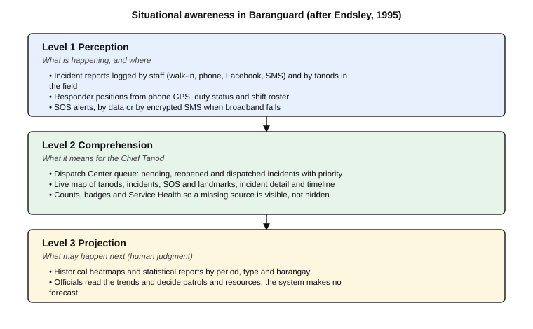
Note. Adapted from Endsley's (1995) three-level model of situational awareness, as applied to the Baranguard emergency dispatch system. Level 1 (Perception) corresponds to real-time data ingestion; Level 2 (Comprehension) corresponds to the consolidated dispatch queue, live map and incident detail; Level 3 corresponds to historical trend visualization supporting situational assessment.
As illustrated in Figure 2-1, these three levels map directly onto the system's core functional layers:
Level 1 Perception: The ability to perceive the status, attributes, and dynamics of relevant elements in the environment. In Baranguard, this corresponds to the system's ability to ingest incident reports logged by staff and by tanods in the field, capture the GPS coordinates and duty status of responders, and receive SOS alerts, including the encrypted SMS alerts sent by offline field tanods.
Level 2 Comprehension: The synthesis of Level 1 elements enables the holistic understanding of the situation. Baranguard achieves this by presenting the elements together on the Dispatch Center: a queue of pending, reopened and dispatched incidents ordered by priority, a live map of tanods, incidents, SOS alerts and community landmarks, the incident detail with its timeline, and counts and badges that agree with one another. The system also reports when one of its own information sources is unavailable, for example when road routing cannot be reached, so that the Chief Tanod is never given a silent gap or an invented value.
Level 3 Projection: The ability to anticipate future states based on comprehension of the current situation. Baranguard supports this level indirectly rather than computationally: the system aggregates historical incident records into spatial heatmaps and descriptive trend reports, from which barangay officials form their own judgments about patrol scheduling and resource placement. The system performs no predictive modeling and generates no forecasts; the projection function in Endsley's model is exercised by the human decision-maker, informed by the retrospective evidence the system presents.
2.4 Concept of the Study
The structural development and data flow of the Baranguard system operate on a comprehensive Input-Process-Output (IPO) conceptual model. This framework illustrates the transformation of raw operational inputs into structured, actionable information through a locally hosted, resilient processing infrastructure.
Input: The system receives data from two primary vectors. The first is administrative data, which includes the barangays, user accounts and devices, the school inventory, rosters and the barangay maps. The second is operational data, comprising incident reports logged by staff through the web form (walk-in, phone call, Facebook message or SMS), field observations and incident narratives captured by tanods on the mobile application, GPS coordinates and duty status transmitted or queued by responder devices, and SOS alerts sent over data or by SMS.
Process: The core processing layer runs on the unified administrative workstation within the barangay command center. The centralized database and the web dashboard are hosted on this single machine, which remains reachable over the barangay local area network during internet outages. Within this environment, the following mechanisms execute:
A. Offline-first sync and SMS decoding. The mobile application synchronizes cached SQLite data to the command center server when a network path is available, whether over cellular data, broadband, or local Wi-Fi. Synchronization is idempotent: a (device_id, client_event_id) pair prevents duplicate records when a batch is retried after an interrupted upload. During partial outages, a gateway phone attached to the workstation receives the SMS fallback messages, and the backend decodes them into structured entries after verifying and decrypting the envelope.
B. Dispatch and routing. The Chief Tanod assigns an incident to a tanod. At night, between 18:00 and 06:00, the system instead sends a dispatch offer to the on-duty tanods in rounds, and the first tanod who accepts is assigned. A road route from the tanod's position to the incident is requested from OpenRouteService when needed; the stored route is reused for a short time, and a straight-line distance is shown, labelled as such, when routing is unavailable.
C. Access control and audit. Every request is checked for role, barangay and ownership on the server. Writes from tanod phones are idempotent and signed by a key held on the device. The audit log records identifiers and statuses only, never narratives, credentials or coordinates.
D. Rostering and reporting. The Chief Tanod builds and publishes the shift roster, tanods record accomplishment entries, and the Secretary prepares reports. These are produced as A4 printouts that officials sign on paper.
Output: The culmination of processing yields: dispatch assignments, offers and push alerts delivered to responder devices; a dispatch queue, live map, SOS panel and incident records for the command center; historical incident and hazard heatmaps supporting patrol planning; printed rosters, accomplishment reports and school-zone reports for paper signing; and an audit log of who acted on which record.
The complete end-to-end data transformation is summarized in Figure 2-2.
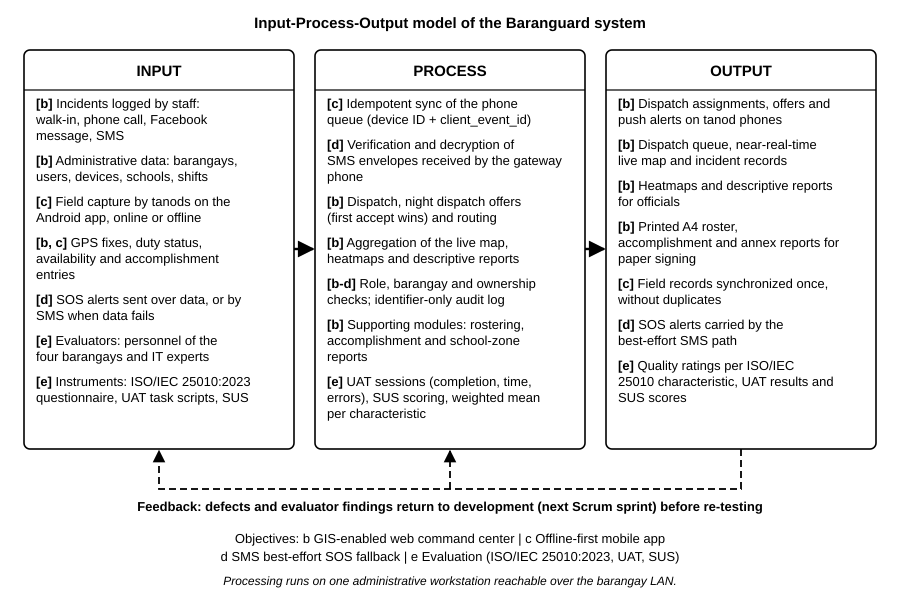
Note. The IPO framework illustrates the three-stage pipeline of the Baranguard system. Inputs consist of administrative and real-time operational data. Processing is performed on the administrative workstation through offline-first synchronization, SMS decoding, dispatch and routing, access control and audit, and rostering. Outputs include dispatch alerts, the command center views, heatmap analytics and printed reports.
2.5 Definition of Terms
The following key terms are defined conceptually and operationally as applied within this capstone project:
Accomplishment report. The monthly report in which a tanod lists the work done, with the confirmed duration of each entry. In this study it is the tanod's record of service, printed and signed on paper, and it is not an automatic attendance record.
Agile Scrum methodology. An iterative software engineering framework that emphasizes continuous improvement and rapid delivery through short development cycles. In this study, it serves as the specific lifecycle adopted to build, test, and refine the system in collaboration with Pilar barangay officials.
Barangay. The basic political and administrative unit of government in the Philippines responsible for public service delivery. Identifies the primary deployment sites for the system: Barangays Dao, Binanuahan, Marifosque, and Banuyo in Pilar, Sorsogon.
Baranguard. Combines "Barangay" and "Vanguard" to represent a frontline defense and administrative response unit in local communities. The official name of the proposed local-server based, offline-first emergency dispatch software developed in this project.
BIMS (Barangay Information Management System). The information system of the Department of the Interior and Local Government that the DILG provides to barangays under its Local Government Unit Support System (LGUSS), including a Katarungang Pambarangay module. Baranguard complements it and does not replace it.
Chief Tanod. The head of the barangay tanods. In the system the Chief Tanod uses the Admin account to dispatch tanods, build rosters and manage users and devices, but is not a responder in the system.
Data Privacy Act of 2012 (RA 10173). A Philippine legislative framework designed to protect all forms of private, personal, or sensitive information. Establishes the statutory obligations that the system's privacy controls are designed to support. The confidential narrative of an incident is readable only by the Secretary and, on the web, the Chief Tanod, and is destroyed after one year.
Dispatch. The act of sending personnel, equipment, or resources to a specific destination to execute an emergency or administrative response. The core mechanism within the command center that allows the Chief Tanod to assign a tanod to an incident and provides GPS routing.
Dispatch offer. At night, a request sent to the on-duty tanods that is accepted by the first tanod who responds while online, who is then assigned to the incident.
Incident record. The operational record of a reported matter in Baranguard, with its type, priority, status, location, report channel and, for the Secretary, a confidential narrative. It is not the barangay's official blotter entry.
Intelligence. In emergency management, curated, actionable information collected and analyzed to support decision-making. Represents the analytical capabilities of the system, which consolidate reports, positions and history into a dispatch queue, live map, heatmaps and statistics for officials.
ISO/IEC 25010:2023. The international standard for software product quality, which defines characteristics such as functional suitability, performance efficiency, compatibility, interaction capability, reliability, security, maintainability, flexibility, and safety, acts as the formal evaluation instrument used by IT experts and end-users to rate the technical integrity and user acceptance of the deployed system.
Local-server deployment. A hosting arrangement in which application and database services run on hardware physically located at the point of use rather than on remote infrastructure. In Baranguard, the database and the web dashboard operate on a single administrative workstation inside the barangay command center, which preserves system availability over the local area network during internet outages.
Offline-first architecture. A software design paradigm in which an application functions primarily without an active internet connection by storing data locally in an embedded database. Defines the structural framework of the mobile application, enabling field Tanods to capture incidents, record GPS coordinates, and access pre-cached MBTiles map packages during network disconnections, with offline records queued in SQLite for automatic synchronization once server connectivity is restored.
Paper-first signing. The practice, adopted in this study, that rosters, accomplishment reports and school-zone reports are printed and signed on paper outside the application. The application does not record signatures or approvals.
Personally identifiable information (PII). Any data that could potentially identify a specific individual, either directly or indirectly, such as names or home addresses. Refers to the sensitive data in incident narratives that the system's access controls, audit rules and retention rule are designed to protect.
Roster. The schedule of shifts of the tanods. It is drafted by the Chief Tanod, published to the tanods, and printed for signing.
SMS best-effort fallback. A communication mechanism that utilizes standard cellular networks to transmit a critical alert during broadband internet outages. While optimized for partial-outage scenarios as a non-guaranteed protocol, complete network blackouts are instead managed by the offline-first SQLite cache.
Tanod. A barangay peace-and-order volunteer who responds to incidents in the field. The only role that uses the Android application.
3 Materials and Methods
This chapter presents the software, hardware, and methodological framework utilized in the development of Baranguard: Barangay Intelligence and Emergency Dispatch System. The resources and methods were selected based on the requirements of an offline-first architecture, a single-workstation local deployment, and the operational constraints of the target local government units.
3.1 Materials
In line with the project's objective to provide a resilient, local-server-based, and offline-first solution for local governance, the materials were chosen to support dependable local hosting, continuous data synchronization, and reliable multi-channel communication without requiring constant, high-bandwidth internet access in the field.
3.1.1 Software
The following software tools and frameworks were utilized in the development of the Baranguard system, with their respective versions summarized in Table 3-1:
PHP 8.2. The primary server-side language, implemented without a web framework using custom routing and serving all API endpoints. Node.js is used only for command-line tooling and tests.
Vanilla JavaScript (ECMAScript 2023+). Responsible for all dashboard frontend logic and live incident and responder updates. The dashboard is written without a JavaScript framework or bundler; offline resilience is provided by the local hosting of the server itself rather than by client-side caching. Offline data capture is handled exclusively by the mobile application.
Ionic React 9 on React 19, with Vite and TypeScript. Provide the mobile-optimized UI components and the build chain of the tanod mobile application, ensuring a native-like experience on Android devices.
MariaDB 10.4 (XAMPP). Serves as the primary structured relational storage layer hosted locally on the administrative workstation within the barangay command center, holding user accounts, incident records, dispatches, rosters and spatial data over the local area network (LAN). The schema is built from numbered, never-edited migrations.
MapLibre GL JS. Renders all interactive maps in both platforms: the live map and heatmap pages on the dashboard, and the live-map and assignment-detail pages in the mobile application. The mobile application reads locally stored MBTiles packages, which is a precondition for offline map display. The web dashboard uses OpenStreetMap raster tiles and a boundary of each barangay taken from the PSA/PSGC barangay polygons.
SQLite with SQLCipher (via Capacitor). Operates as the encrypted embedded local database within the mobile application, capturing and caching field reports, GPS coordinates, shifts and accomplishment entries during offline periods before synchronizing them to the command center server.
Capacitor 8. Acts as the bridge that wraps the web-based JavaScript codebase into a native Android container, granting the application access to background location, push notification services, a device-held signing key and native SMS functions for the emergency fallback alert.
Visual Studio Code and Android Studio. The primary integrated development environments used for writing, debugging, and compiling the full-stack codebase and the final APK file for physical deployment.
Git and GitHub. Used for source code management and collaborative team development, ensuring version history is preserved.
Plain CSS (no framework). Dashboard styling is implemented in hand-authored CSS with a token-based design system and a single self-hosted typeface, without a utility framework or preprocessor, avoiding a build step and keeping the deployed dashboard directly editable by future maintainers, a maintainability consideration for barangay-level deployment where no development toolchain is present.
Local GSM gateway (paired mobile device). To carry emergency fallback messages when broadband fails, an Android phone with its own SIM is tethered to the unified administrative workstation and runs a small gateway application. It receives the encrypted SOS messages sent by tanod phones and sends dispatch text messages over the cellular network, independently of terrestrial IP networks. No cloud SMS provider is used.
XAMPP Server Environment. Provides the local Apache web server and MariaDB database stack hosted directly on the unified administrative workstation, ensuring full command center operations remain functional over LAN during internet broadband blackouts without external cloud hosting dependencies.
Cloudflare Tunnel. A persistent outbound tunnel from the workstation that gives the web dashboard and the API a stable public address, so that tanod phones can reach the server away from the barangay LAN. It adds no hosting: the data stays on the workstation.
OpenRouteService (ORS). Provides turn-by-turn navigation routing via its GeoJSON directions endpoint. Routing requires network connectivity and spends a daily request quota, so the system reuses a recent route, caches its health check, and pauses requests after a failure. Where ORS is unreachable, the application returns a previously stored route where one exists, or a labelled straight-line distance, or reports the route as unavailable. Map display remains functional offline through cached tiles even when routing does not.
Firebase Cloud Messaging (FCM). Delivers push notifications (assignments, dispatch offers, SOS) to the tanod phones. The notification body never carries an incident narrative.
| Software | Version |
|---|---|
| PHP | 8.2.12 |
| MariaDB (XAMPP) | 10.4.32 |
| Apache (XAMPP) | 2.4.58 |
| Node.js (tooling and tests only) | 24.14.0 |
| Vanilla JavaScript | ECMAScript 2023 |
| MapLibre GL JS (web, vendored / mobile) | 4.7.1 / 6.9 |
| OpenRouteService API | v2 (directions/geojson) |
| Ionic React | 9 |
| React | 19.0 |
| Capacitor | 8.5 |
| @capacitor-community/sqlite (SQLCipher) | 8.1 |
| Vite | 8 |
| TypeScript | 5.9 |
| Android SDK (compile and target / minimum) | API 36 / API 24 |
| Gradle / JDK | 8.14.3 / 21 |
| Android Studio | Panda 4 |
| Visual Studio Code | 1.85+ |
| Git | 2.53 |
| Cloudflare Tunnel (cloudflared) | 2026.9.3 |
Note. Versions listed reflect the exact tool and library versions used during development and evaluation, to support reproducibility. Dashboard fonts are self-hosted (Inter) so that the dashboard renders identically without internet access.
eGIF Compliance. In accordance with the DICT's e-Government Interoperability Framework (eGIF) v2.0, the system's REST API endpoints use JSON as the standard data exchange format, conforming to eGIF's mandate for open, non-proprietary standards in government information systems. SMS message encoding follows the standard GSM 03.38 character set for maximum compatibility across Philippine mobile networks. No proprietary or closed-format data exchange protocols are used in inter-system communication. Where the system interfaces with cloud infrastructure, standard HTTPS with TLS encryption is employed, consistent with eGIF's security interoperability guidelines. While formal eGIF compliance audits are primarily mandated for higher-level government agencies (cities and municipalities), Baranguard voluntarily adopts these eGIF v2.0 interoperability standards. This proactive compliance ensures the barangay-level system can seamlessly integrate with the DICT's larger e-Government architecture in the future.
3.1.2 Hardware
The hardware resources employed for development and field deployment are outlined below. Because the system is designed for deployment on a single workstation rather than on dedicated server hardware, no rack-mounted or clustered infrastructure is required at the barangay hall. The workstation runs the web dashboard, the API and the database; it requires no graphics processor, because no artificial intelligence workload is hosted on it. A phone with a SIM card is tethered to the workstation as the SMS gateway. The specific hardware used for the development, unified administrative, and field deployment phases is outlined in Table 3-2.
| Device | Role | Specifications |
|---|---|---|
| Development and administrative workstation | Primary machine for coding, API integration and local server configuration; also serves as the web-based command center, API and database host | Intel Core i5-1235U (12th Gen), about 8 GB RAM (7.7 GB usable), integrated graphics, Windows 11 |
| Android mobile devices | Field testing and deployment for the tanod mobile application | Minimum Android 7.0 (API 24), GPS module, active cellular reception; tested on an Infinix X6840 and a Samsung Galaxy A21s |
| SMS gateway phone | Receives encrypted SOS messages and sends dispatch texts over its own SIM | Android phone with a SIM card and SMS permission, connected to the workstation by USB |
3.2 Software Methodology
The Agile Scrum framework was adopted as the development methodology for this project, consistent with its documented use in Filipino IT capstone projects (Ng, 2025). Scrum was selected over traditional Waterfall and Rapid Application Development (RAD) because it provides time-boxed checkpoints (sprints) that allow barangay officials to test the SMS fallback mechanism, the dispatch workflow and the paper-based reporting workflow continuously, ensuring complex components align with on-the-ground public safety requirements, as compared in Table 3-3. The standard Agile Scrum process utilized throughout the system's development life cycle is illustrated in Figure 3-3 below.

Note. This diagram illustrates the iterative Scrum cycle followed throughout the project's nine development phases, from the Pre-Sprint baseline measurement collection through Sprint 8 (User Acceptance Testing and ISO/IEC 25010:2023 evaluation). Each sprint followed the standard cycle of sprint planning, development, review, and retrospective described in Sections 3.2.1 through 3.2.5. The specific backlog item and duration for each sprint are detailed in Table 3-5.
| Criterion | Scrum (selected) | Waterfall | RAD |
|---|---|---|---|
| Stakeholder validation | Bi-weekly sprint reviews | End of project cycle only | Prototype-focused only |
| Scope control | Managed via product backlog | Rigid, inflexible requirements | Scope tends to expand |
| Complex integrations | Sprint-by-sprint integration | Sequential, late-stage integration | Limited to rapid prototypes |
3.2.0 Baseline Measurement
Prior to Sprint 0, the research team conducted structured observation sessions and semi-structured interviews with tanods and barangay officials across the four target barangays to establish pre-intervention performance baselines. These baseline metrics serve as the quantitative comparator against which post-deployment ISO 25010:2023 evaluation scores and self-reported efficiency improvements are contextualized.
The following metrics were collected from each barangay through a minimum of two observation sessions and three staff interviews per barangay:
- Incident recording time: The average time (in minutes) required for a tanod or staff member to manually write and file a complete incident entry from the moment an incident is verbally reported, including time spent locating the correct logbook, writing the narrative, and obtaining a supervisor signature.
- Tanod dispatch time: The average time (in minutes) for the Chief Tanod to identify an available tanod, contact them via mobile application alert or SMS, and confirm their deployment to an incident location.
- Data integrity error rate: The number of documented data loss or legibility incidents per quarter, including lost logbook pages, water-damaged entries, illegible handwriting flagged during audit, and entries with missing required fields.
- Post-deployment comparison (applies to the three metrics above): The same three metrics were re-measured after the deployment period. Dispatch coordination time was captured from system timestamps rather than by observation, specifically, the interval between dispatch creation and responder acknowledgement, and incident recording time was captured by timing a staff member entering a standard test incident, which removes observer effects from the post-intervention measure. Because the pre-intervention measure is observational and the post-intervention measure is instrumented, the two are not statistically equivalent; the comparison is reported as an indicative operational change rather than a controlled experimental result.
3.2.1 Project Initialization and Defining the Product Backlog
| Item | User Story |
|---|---|
| 1 | As the Chief Tanod, I want to view a GIS heatmap so that I can visualize high-risk incident zones. |
| 2 | As the Chief Tanod, I want to track tanods via GPS so that I can deploy the closest responder to an emergency. |
| 3 | As a tanod, I want to log incident details offline so that I can capture data even when typhoon winds disrupt mobile internet. |
| 4 | As a tanod, I want the application to automatically send an SMS fallback alert so that my emergency coordinates reach the command center when broadband fails and cellular signal is still available. |
| 5 | As the Chief Tanod, I want an incident logged from a walk-in, phone call, Facebook message or SMS to record how it reached the barangay so that the record shows its source. |
| 6 | As the Chief Tanod, I want to send a night dispatch offer to on-duty tanods so that the first available tanod is assigned without phoning each one. |
| 7 | As the Barangay Secretary, I want to be the only one who edits the incident lifecycle and the complainant's name so that records custody stays with the Secretary. |
| 8 | As the Chief Tanod, I want to publish the tanod roster, and as a tanod to submit my accomplishment report, so that both can be printed and signed on paper. |
| 9 | As the Punong Barangay, I want a read-only dashboard, analytics and approvals view so that I can oversee operations without handling cases. |
The development process was initiated through a formal kick-off meeting with representatives from the four target barangays in Pilar, Sorsogon. Through semi-structured interviews and prototype reviews, the team identified the operational bottlenecks in current manual incident reporting processes. These requirements were consolidated into a formalized product backlog, which serves as the prioritized list of all features needed for the system, as detailed in Table 3-4 above.
3.2.2 Sprint Planning
The project was divided into a pre-sprint phase for baseline measurement and a nine-sprint development cycle (Sprint 0 to Sprint 8), as outlined in Table 3-5.
| Item | Sprint Backlog Description | Sprint | Week |
|---|---|---|---|
| 0 | Baseline measurement collection and pre-intervention documentation | Pre-Sprint | Week 0 |
| 1 | Local server environment setup (XAMPP/MariaDB) and database schema design | Sprint 0 | Week 1–2 |
| 2 | Development of web-based command center and GIS dashboard | Sprint 1 | Week 3–4 |
| 3 | Development of mobile application UI and offline SQLite caching engine | Sprint 2 | Week 5–6 |
| 4 | Integration of real-time GPS tracking and asynchronous local server sync | Sprint 3 | Week 7–8 |
| 5 | Local GSM gateway integration and encrypted SMS fallback protocol | Sprint 4 | Week 9–10 |
| 6 | Tanod workflow: dispatch offers, availability, rostering, accomplishment reports, referrals and school-zone reports | Sprint 5 | Week 11–12 |
| 7 | Chief Tanod phone console, report channels, retention rules and printable reports | Sprint 6 | Week 13–14 |
| 8 | Role-based access control, security hardening, and integration testing | Sprint 7 | Week 15–16 |
| 9 | User acceptance testing (UAT) and ISO/IEC 25010:2023 evaluation | Sprint 8 | Week 17–18 |
3.2.3 Sprint Development
During the sprint development phase, the team executed the planned technical tasks. The web platform was built and deployed to the XAMPP environment on the unified administrative workstation, while the Android APK was compiled using Ionic and Capacitor. Progress was tracked through recorded stand-up sessions logged in the team development log, with issues, particularly SMS gateway reliability and background location on Android devices, raised and resolved against the sprint backlog, and code branches merged using Git. Every design decision was recorded with its reason in the development log, and the numbered database migrations were never edited once applied.
3.2.4 Sprint Review
At the conclusion of each two-week sprint, a functioning software increment was demonstrated to the user acceptance testing team, which included barangay officials and tanods. End-users tested new features, such as testing the mobile application with mobile data and Wi-Fi switched off, but cellular signal kept on (airplane mode would also disable SMS), to verify that SMS fallback triggers, and provided immediate feedback on operational viability. Several scope decisions were taken as a result: the electronic blotter and the public report form were removed because the barangays keep these records in their own binders and the DILG provides BIMS and its Katarungang Pambarangay module for the case process, and rosters and reports are printed and signed on paper rather than approved in the application.
3.2.5 Sprint Retrospective
Following each sprint review, the development team conducted an internal retrospective to evaluate their workflow. They discussed what engineering practices succeeded and what required adjustment, such as keeping every offline write idempotent, limiting calls to the external routing service, and making sure that every screen states honestly when an information source is unavailable. By identifying these core issues early, developers systematically eliminated technical debt, integrated localized automated testing, and enhanced overall system predictability. These process adjustments ensured high code quality and team efficiency throughout the development cycle.
3.3 Evaluation Procedure
The evaluation was conducted to determine whether Baranguard met its functional requirements and to assess its software quality using the ISO/IEC 25010:2023 standard. A summary of the system testing and evaluation methods is provided in Table 3-6.
| Test Type | Purpose |
|---|---|
| Unit and integration testing | Validate individual module functions and cross-module data propagation through automated backend, web and mobile test suites |
| Security testing | Verify role, barangay and ownership checks on every endpoint, session revocation, lockout, device-signed writes and that confidential narratives never leave the system |
| Performance testing | Measure API response times (median and 95th percentile) on the administrative workstation against the two-second criterion, and the delivery delay of GPS fixes and synchronized records |
| Offline and duplicate testing | Verify that records captured offline reach the server exactly once after reconnection, including retried and conflicting batches |
| System testing | End-to-end workflow validation under simulated outage scenarios |
| User acceptance testing (UAT) | Scenario-based task evaluation by barangay personnel using a signed scenario sheet per role |
| Safety scenario testing | Verify defined system behavior under a matrix of adverse operational scenarios (GPS error or no fix, duplicate alerts, delayed SMS, misassigned dispatch, a tanod without mobile data, routing unavailable) |
3.3.1 Respondents and Sample Size Justification
The study utilized a purposive sampling technique to select 27 respondents. Because evaluating the system requires specific domain knowledge and direct operational involvement in emergency dispatch protocols, probability sampling formulas were not applied. Instead, respondents were deliberately chosen based on their technical expertise and their mandated roles within the local government units of Barangays Dao, Binanuahan, Marifosque, and Banuyo. The sample includes IT professionals to assess the system's technical and architectural integrity, alongside a comprehensive cross-section of barangay personnel, ranging from executive officials to frontline responders, to validate operational usability and functional suitability under the ISO/IEC 25010:2023 standard.
The specific distribution of these 27 respondents and the rationale for their selection are detailed in Table 3-7.
| Role | Count | Rationale |
|---|---|---|
| IT Experts | 3 | Technical panel to evaluate security, performance and codebase maintainability. |
| Punong Barangay | 4 | Executive users validating the dashboard, analytics and approvals views for overall barangay governance and resource allocation. |
| Barangay Secretary | 4 | Records officers assessing incident records, confidential narrative handling, reports and RA 10173-related controls. |
| Chief Tanod | 4 | The dispatchers of the system, evaluating the Dispatch Center, live map, rostering and the phone console. |
| Barangay Tanods | 12 | Frontline field responders tasked with testing the mobile application's usability, GPS routing, offline capture and SMS fallback. |
| Total | 27 |
Note. The dispatcher function described in Chapters 1 and 2 is performed by the Chief Tanod, who uses the Admin account, with the Barangay Secretary as back-up dispatcher, and not by a separate system role. Residents and Lupon members are not users of the system and are therefore not respondents.
3.3.2 Evaluation Instrument and Validity
The primary research instrument was a structured survey questionnaire anchored on the ISO/IEC 25010:2023 Systems and Software Quality Requirements and Evaluation (SQuaRE) model. This study adopts the nine-characteristic product quality model defined in ISO/IEC 25010:2023. The 2023 revision is used rather than the 2011 edition because it introduces Safety as a top-level quality characteristic. Given that Baranguard dispatches first responders to active emergency scenes, where an incorrect route or an undelivered dispatch alert could place a Tanod in physical danger, Safety is a necessary evaluation dimension for this system and could not be assessed under the 2011 model. To ensure semantic clarity and prevent technical jargon from confounding the data, the questionnaire items were contextualized into local administrative terminology, written in English with a Filipino version, and pre-tested for clarity.
The questionnaire assessed the system across the nine characteristics of the 2023 model: Functional Suitability, Performance Efficiency, Compatibility, Interaction Capability, Reliability, Security, Maintainability, Flexibility, and Safety. Because "Interaction Capability" and "Flexibility" are unfamiliar terms to non-technical respondents, questionnaire items for these characteristics were phrased in operational language (ease of use and learnability; adaptability across devices and deployment settings) while retaining the standard's definitions for analysis and reporting. Separate forms were prepared for four respondent groups: tanods, the Secretary and Chief Tanod, the Punong Barangay and Kagawad, and IT practitioners and faculty, so that each group answers only the items it has a basis to judge. Prior to full-scale deployment, the instrument underwent content validation by a panel of software engineering experts and disaster risk reduction professionals to verify that each metric accurately mapped to the operational realities of local government units.
The instrument utilized a 5-point Likert scale. Data were analyzed using the weighted mean formula:
X̄ = (∑fx) / N
Where X̄ is the weighted mean, f is the frequency of responses, x is the Likert scale weight (1–5), and N is the total number of respondents. The verbal interpretation and description for each mean range are presented in Table 3-8.
| Range | Verbal Interpretation | Description |
|---|---|---|
| 4.21 – 5.00 | Excellent | The characteristic is fully satisfied, with no observed deficiency |
| 3.41 – 4.20 | Very Satisfactory | The characteristic is satisfied, with minor room for improvement |
| 2.61 – 3.40 | Satisfactory | The characteristic is met at an acceptable level |
| 1.81 – 2.60 | Fair | The characteristic is partially met and needs improvement |
| 1.00 – 1.80 | Poor | The characteristic is not met |
3.3.3 Test Data and Measurement Procedure
To keep every measurement reproducible and free of real personal data, a specific procedure was applied to the technical tests.
Test data. All technical tests used synthetic data. Automated test suites each create a disposable database and a throwaway application user, apply the full chain of numbered migrations, run against a temporary server on a spare port, and delete everything afterward, so that the real database is never touched. For measurements and demonstrations, a separate demonstration database was seeded with synthetic incidents, dispatches, GPS tracks and rosters whose coordinates were placed on real roads inside the Barangay Dao boundary. No real resident data or real blotter records from the target barangays were used.
Response-time measurement. A script logs in once as the Chief Tanod and then times successive read requests, one after another, to the dispatch, incident, GPS, summary and heatmap endpoints. It reports the median, 95th percentile and maximum in milliseconds after a stated warm-up, together with the number of requests and the machine on which it was run. Because it runs on the workstation, it measures server time without the network, and it does not measure rendering or many simultaneous users.
Delivery and synchronization measurement. Delay figures are computed from timestamps the system already stores: the difference between the time a GPS fix was recorded on the phone and the time the server stored it, the difference between the time an incident was created offline and the time it was synchronized, and the success, duplicate and failure counts of each synchronization batch. These figures are reported only when they come from real use of the system; figures computed from seeded data are shown as seed data and are not cited as results.
Dispatch response time. Following the definition used throughout the system, the response time of an incident is the interval from the creation of the incident record to the earliest arrival of any responder on it, counted once per incident.
3.3.4 Acceptance Criteria
The Baranguard system was considered ready for deployment when all of the following criteria were met:
- All user stories in the product backlog successfully pass UAT validation.
- The system achieves a weighted mean of at least 4.21 (Excellent) in the overall ISO/IEC 25010:2023 evaluation across all nine quality characteristics.
- The SMS best-effort fallback protocol successfully transmits the encoded coordinate payload in at least 19 out of 20 (95%) simulated broadband disconnection scenarios, across three distinct Android device models, under conditions where cellular signal strength is at or above −100 dBm. The exact 95% confidence interval of the observed rate is reported with the result, because 20 trials give a wide interval. The threshold reflects the best-effort nature of the SMS channel rather than the absolute guarantee implied by a 100% criterion.
- Records captured offline are synchronized to the server exactly once in at least 95% of the test batches, with every retried or conflicting batch resolved without a duplicate record.
- The 95th percentile response time of the key dashboard read endpoints is below two seconds on the administrative workstation.
- No endpoint returns a record of another barangay or a confidential narrative to a role that may not read it in the security tests.
3.4 Ethical Considerations
This study adhered to the following ethical guidelines throughout its development and testing phases:
Informed consent. Written consent was obtained from all 27 respondents prior to their participation in user acceptance testing and evaluation activities.
Data minimization and privacy (RA 10173). No actual historical resident data or real blotter records from the target barangays were used during software development or evaluation. All testing was conducted using entirely synthetic, fabricated data generated by the research team to ensure zero risk of real-world privacy breaches. The system uses no artificial intelligence service; the only data that leaves the workstation for a third party are the origin and destination coordinates of a route request to OpenRouteService, map tiles requested from OpenStreetMap, and push notifications through Firebase Cloud Messaging, none of which carries an incident narrative.
Voluntary participation. Participation in the evaluation was completely voluntary. Respondents were informed of their right to withdraw from testing scenarios at any time without consequence.
Data handling during deployment testing. Where user acceptance testing was conducted using the deployed system, all records created during testing were flagged as test data and excluded from the operational records. The audit log records identifiers and action statuses only and does not retain raw personal information, consistent with the record-keeping requirements of the Implementing Rules and Regulations of RA 10173. Confidential narratives are destroyed automatically after one year, and the retention periods for the other record types are provisional until confirmed by the barangay and the Commission on Audit.
4 Results and Discussion
This chapter reports the results of the study in four parts. Section 4.1 presents the result of the needs assessment, that is, the problems of the current process and the requirements derived from them. Section 4.2 presents the data gathered for that purpose. Section 4.3 presents Baranguard as it was developed and tested, and Section 4.4 presents how the evaluators rated it against ISO/IEC 25010:2023. Each exhibit is introduced in the text before it appears and interpreted after it.
4.1 Needs Assessment Result
The needs assessment was designed to establish how incidents are reported, recorded and dispatched in Barangays Dao, Binanuahan, Marifosque and Banuyo before the system, and which of those steps cause delay, loss or risk. The procedure is described in Section 3.2.0: structured observation sessions and semi-structured interviews with tanods and barangay officials, supported by the Key Informant Interview Guide and the Needs Assessment Questionnaire in the project's instruments folder. Figure 4-1 presents the current process as the study understood it from the background of the study and the baseline procedure.
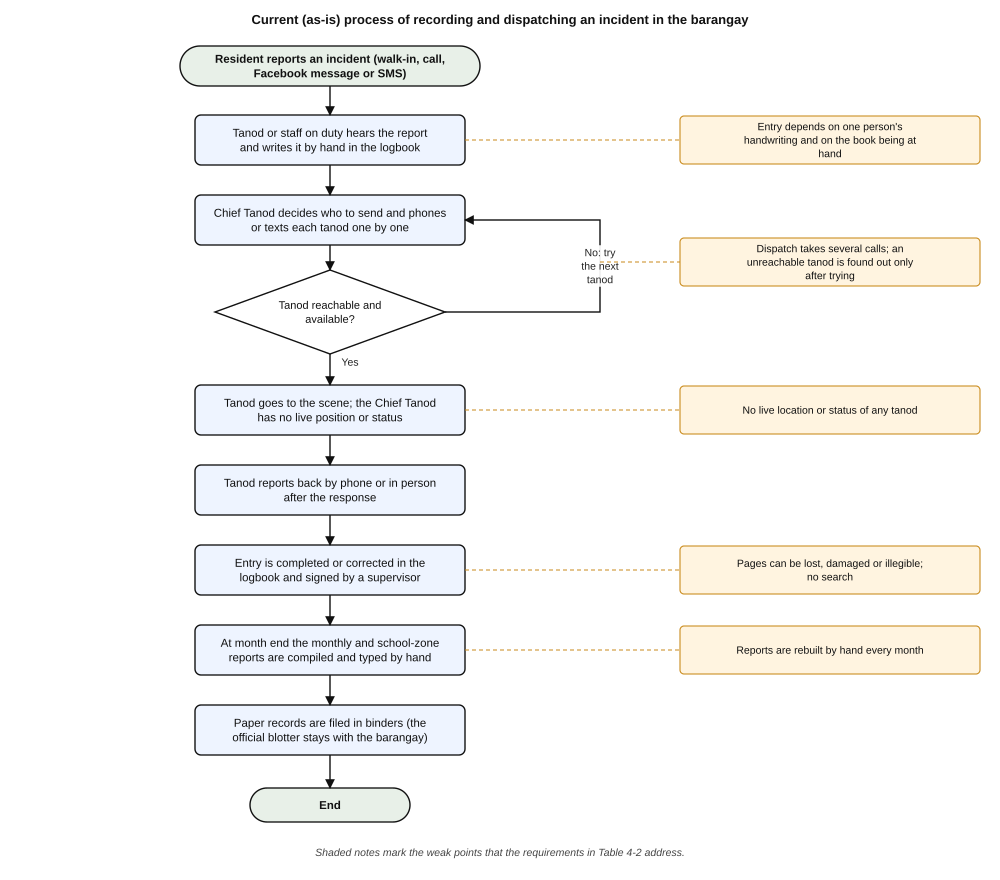
Note. Drawn from the background of the study (Section 1.1) and the baseline procedure (Section 3.2.0). The sequence of steps is to be confirmed against the interview transcripts and observation notes before the manuscript is finalized.
The figure shows that a report enters the barangay through any of four channels, is written by hand in a logbook, and is then handled by telephone: the Chief Tanod chooses a tanod and contacts each one in turn until one is reachable. After the response the entry is completed on paper, and reports for the month are compiled by hand. The flow contains no step at which the Chief Tanod can see where a tanod is or whether a tanod is free, and every record exists in one physical copy. Table 4-1 summarizes the problems identified from this process and the evidence method used for each.
| Code | Identified problem | Evidence gathered | Effect on operations |
|---|---|---|---|
| P1 | Incidents are recorded by hand in logbooks and entries can be lost, damaged or illegible. | Observation of recording and review of logbook pages (Section 3.2.0, measure 3: data loss and legibility incidents per quarter). Count found: pending. | Incomplete or unreadable records; no search across entries. |
| P2 | Dispatch is arranged by calling or texting tanods one at a time. | Timed observation of dispatch (measure 2: minutes from report to confirmed deployment). Result: pending. | Slow dispatch; an unreachable tanod is discovered only after trying. |
| P3 | The Chief Tanod has no live position or status of tanods in the field. | Interview with the Chief Tanod of each barangay and the observation sessions. Number of barangays confirming: pending. | The nearest tanod cannot be chosen; response depends on who answers the phone. |
| P4 | Mobile data and cellular service fail during typhoons and fires, and reporting stops. | National household internet access of about 48.8 percent (PSA, 2025) and the typhoon exposure of Pilar (Section 1.1). Local outage record: pending. | Field reports and alerts are delayed or never sent. |
| P5 | Duty rosters, monthly accomplishment reports and school-zone reports are compiled by hand. | Observation and timing of one reporting cycle (Section 3.2.0). Hours per cycle: pending. | Reports are late and staff time is diverted from service. |
| P6 | Confidential narratives and personal details sit in unprotected logbooks. | Document review against Republic Act 10173 (Section 1.1). Observed handling: pending. | Risk of exposure and no audit trail of who read a record. |
Table 4-1 indicates that the problems are of two kinds. P1, P5 and P6 concern the record itself, which is paper, unsearchable and unprotected. P2, P3 and P4 concern coordination under time pressure and unreliable networks. This pattern matches the literature in Chapter 2. Longcop and Fuentes (2024) found that manual tracking limited the emergency response of barangay health teams, and Villafuerte (2024) found that communication infrastructure remained a critical challenge for barangay public safety officers. The existing barangay information systems reviewed by Tosper et al. (2025) address the record problems but not the coordination problems, which is the gap Baranguard was built to fill.
The requirements derived from the problems are presented in Table 4-2. Functional requirements are coded FR and non-functional requirements NFR. Priority follows the team's product backlog: Must items were required for the study to meet its objectives, and Should items support operations.
| Code | Requirement statement | Type | Priority |
|---|---|---|---|
| FR-01 | The system shall record an incident with its type, location, priority and report channel, from the web dashboard or from the Chief Tanod's phone, and give it a unique code per barangay and year. | Functional | Must |
| FR-02 | The system shall let a tanod capture an incident, evidence and duty status without a connection and send each record to the server exactly once when the connection returns. | Functional | Must |
| FR-03 | The system shall let the Chief Tanod, or the Secretary as back-up dispatcher, assign an on-duty tanod to an incident, and at night offer it to on-duty tanods so that the first to accept is assigned. | Functional | Must |
| FR-04 | The system shall show tanod positions and incidents on a map limited to the barangay boundary and give the assigned tanod a road route. | Functional | Must |
| FR-05 | The system shall let a tanod raise an SOS that still reaches the command center by encrypted SMS when the data connection is lost. | Functional | Must |
| FR-06 | The system shall present incident statistics, response time and a historical incident heatmap. | Functional | Must |
| FR-07 | The system shall support tanod availability, draft and published rosters, and a daily hours limit. | Functional | Should |
| FR-08 | The system shall prepare each tanod's monthly accomplishment report for printing and signing on paper. | Functional | Should |
| FR-09 | The system shall keep a referral log and a school inventory with check-ins and print the Safer School Zones annexes. | Functional | Should |
| FR-10 | The system shall restrict every function by role and barangay and keep confidential narratives with the Secretary and the Chief Tanod only. | Functional | Must |
| FR-11 | The system shall keep an audit log of actions and destroy confidential narratives after one year. | Functional | Must |
| NFR-01 | Key dashboard reads shall answer within two seconds at the 95th percentile on the administrative workstation. | Performance | Must |
| NFR-02 | The mobile application shall run on Android 7.0 (API level 24) and above and exchange JSON over HTTPS. | Compatibility | Must |
| NFR-03 | Personal data shall be protected as required by Republic Act 10173: encrypted phone storage, encrypted SMS payloads and no narrative in any notification. | Security | Must |
| NFR-04 | The core system shall run on one local workstation without a cloud service. | Reliability | Must |
| NFR-05 | The data shall be backed up on a schedule and restorable, with the restore tested. | Reliability | Should |
Table 4-2 shows that the requirement set was derived from the problems and from the user stories in Table 3-4, and not added for its own sake. The traceability from each problem to its requirements and to the module that addresses it is in Table 4-3, which is the reason each module in Section 4.3.4 exists.
| Problem code | Requirements | Module that addresses it |
|---|---|---|
| P1 | FR-01, FR-11 | Incident Management and Incident Detail (Figures 4-12 to 4-14) |
| P2 | FR-03 | Dispatch Center and night dispatch offers (Figure 4-10) |
| P3 | FR-04, FR-06 | Live Map, Analytics and the tanod GPS reporting (Figures 4-11, 4-16, 4-17) |
| P4 | FR-02, FR-05, NFR-04 | Offline queue and SOS by SMS in the tanod application (Appendix A) |
| P5 | FR-07, FR-08, FR-09 | Scheduler, Approvals, Accomplishment Reports, Safer School Zones, Referral Log (Figures 4-15, 4-18 to 4-21) |
| P6 | FR-10, FR-11, NFR-03 | Role and access control, audit log and retention (Section 4.3.6) |
Every problem in the table is covered by at least one requirement and every functional requirement is covered by a module. The traceability also marks the boundary of the study: nothing was built for the official blotter or the Katarungang Pambarangay case records, because the barangays keep these in their binders and in the DILG BIMS, and Baranguard complements and does not replace them.
4.2 Data Gathering Result
The needs assessment and the data gathering were run as one activity, so they are reported under separate headings but come from the same fieldwork. This section reports the administration of the instruments, the profile of the respondents, their responses, the themes of the interviews and the records obtained. The figures are pending until the instruments are administered; the structure of each table is final.
Table 4-4 lists the instruments, their target groups and their administration. The response rate is computed as valid returns divided by the number distributed, multiplied by 100.
| Instrument | Target group | Distributed | Retrieved | Valid returns | Response rate |
|---|---|---|---|---|---|
| Key informant interview guide (Guides A to D) | Chief Tanod, Secretary, Punong Barangay, tanods | pending | pending | pending | pending |
| Needs assessment questionnaire | Tanods and barangay officials of the four barangays | pending | pending | pending | pending |
| UAT scenario sheets (92 cases, parts B to F) | One user per role | pending | pending | pending | pending |
| ISO/IEC 25010:2023 evaluation forms (Groups A to D) | 27 planned evaluators (Table 4-19) | pending | pending | pending | pending |
| Total | pending | pending | pending | pending |
The respondents are profiled in Table 4-5 by the two characteristics that matter to the study, role and barangay. The percentages are computed within each characteristic and each characteristic is reported over the same respondents.
| Characteristic | Category | Frequency | Percentage |
|---|---|---|---|
| Role | Tanod | pending | pending |
| Chief Tanod | pending | pending | |
| Barangay Secretary | pending | pending | |
| Punong Barangay | pending | pending | |
| IT expert | pending | pending | |
| Barangay | Dao | pending | pending |
| Binanuahan | pending | pending | |
| Marifosque | pending | pending | |
| Banuyo | pending | pending |
Table 4-6 will summarize the responses to the needs assessment questionnaire with the frequency of each rating, the weighted mean and the verbal interpretation, using the scale of Table 4-20.
| Part | Distribution of ratings (5 to 1) | Weighted mean | Verbal interpretation |
|---|---|---|---|
| A. The current process (all respondents) | pending | pending | pending |
| B1. Tanod | pending | pending | pending |
| B2. Barangay Secretary | pending | pending | pending |
| B3. Chief Tanod | pending | pending | pending |
| B4. Punong Barangay | pending | pending | pending |
The interview responses are grouped into themes by the problem codes of Table 4-1. Table 4-7 reports, for each theme, how many interviewees expressed it and one short representative statement identified by role only, for example Tanod 2 or Secretary 1.
| Theme (problem code) | Respondents who expressed it | Representative statement |
|---|---|---|
| Handwritten records are lost or unreadable (P1) | pending | pending |
| Dispatch by calling one tanod at a time (P2) | pending | pending |
| No knowledge of where tanods are (P3) | pending | pending |
| No signal during typhoons or fires (P4) | pending | pending |
| Reports compiled by hand (P5) | pending | pending |
| Privacy of narratives and names (P6) | pending | pending |
Table 4-8 lists the records obtained from the barangays, described by type and not by field. The field-level structure that the system gives to such records is presented as the data dictionary in Section 4.3.3 and Appendix B.
| Record type | Covering period | Volume | Format | How it was used in the study |
|---|---|---|---|---|
| Incident logbook entries (blotter) | pending | pending | Paper | Baseline of recording time and data loss. Not copied into the system. |
| Tanod duty rosters | pending | pending | pending | Design of the roster and availability screens |
| Monthly accomplishment reports | pending | pending | pending | Design of the accomplishment entry and the printout |
| Safer School Zones forms (Annexes B, C-1 and D) | Forms in use | pending | Paper forms supplied by the barangay | Layout of the school inventory and the printouts, marked as draft until the circular is checked |
Data preparation and privacy handling. No real blotter record, name or contact number from the barangays was entered into the system. All system tests, measurements and screenshots in this chapter use synthetic data: a demonstration database of fictitious tanods, residents and incidents whose coordinates were placed on real roads inside the Barangay Dao boundary, and disposable databases created and deleted by each automated test. Respondents gave written consent before taking part (Section 3.4), instruments carry no resident names, and speakers in Table 4-7 are identified by role only.
4.3 The Baranguard Barangay Intelligence and Emergency Dispatch System
This section presents the system as it was built, from the whole to the parts and from design to evidence. The built system departs from the design first proposed in three places, each for a stated reason. The electronic blotter with automated redaction by a local language model was removed, because the barangays keep the blotter in binders and the DILG provides BIMS for the case process, and without a blotter there was nothing for the model to process. The public citizen report form and the Citizen Reports inbox were removed, because residents report through the barangay's existing channels and staff log the report with its channel. Signature approval inside the application was replaced by printing and signing on paper, because that is how the officials already approve. All figures that show screens use the demonstration database and fictitious names.
4.3.1 System Overview and Architecture
Baranguard is a local-server-based, offline-first system for barangay incident handling and emergency dispatch. Its users are the Chief Tanod, the Barangay Secretary and the Punong Barangay on a web dashboard, and the tanods on an Android application. It replaces the telephone-and-logbook dispatch described in Figure 4-1 for the operational steps of reporting, assigning, tracking and reporting, while the official blotter stays in the barangay's binders. Figure 4-2 presents the architecture.
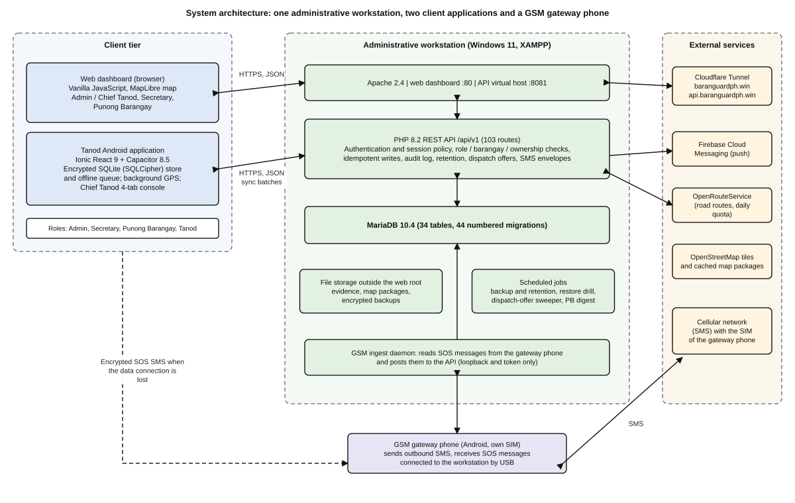
The system has three tiers. In the client tier, the web dashboard is plain JavaScript with a vendored map library and the Android application is built with Ionic React and Capacitor, storing its data in an encrypted SQLite database with an offline queue. In the workstation tier, Apache serves the dashboard and the API, a PHP 8.2 application implements 103 routes in 27 route files, and MariaDB holds 34 tables created by 45 numbered migrations. Evidence files, map packages and encrypted backups are kept outside the web root, scheduled jobs handle backup, retention and the night dispatch offers, and a daemon reads incoming SOS messages from the gateway phone. External services are used only where no local alternative exists: a Cloudflare tunnel for access from outside the workstation, Firebase for push messages, OpenRouteService for road routes and OpenStreetMap for map tiles.
The components communicate by HTTPS and JSON, except the SMS path, which carries the encrypted SOS from a tanod phone over the cellular network to the gateway phone that is attached to the workstation. The arrangement was chosen so that the core functions need only the workstation: data lives on one machine under the barangay's control, which supports the data privacy requirement, and the field application keeps working without a connection and synchronizes later. The cost of this choice is a single point of failure, which Section 4.4.5 discusses.
4.3.2 Process and Data Models
The data flow diagrams follow the Kendall and Kendall notation: a double square is an external entity, a rounded rectangle is a process, an open-ended rectangle is a data store, and an arrow is a data flow named with a noun. Figure 4-3 presents the context diagram. It shows the system as the single process 0 with its six external entities: barangay staff, the tanod using the Android application, the Punong Barangay, the GSM gateway phone on the cellular network, the Firebase push service and OpenRouteService. Each entity is connected only to the process, no two entities are connected to each other, and every flow has a direction. Residents do not appear because they report through staff and do not use the system directly.
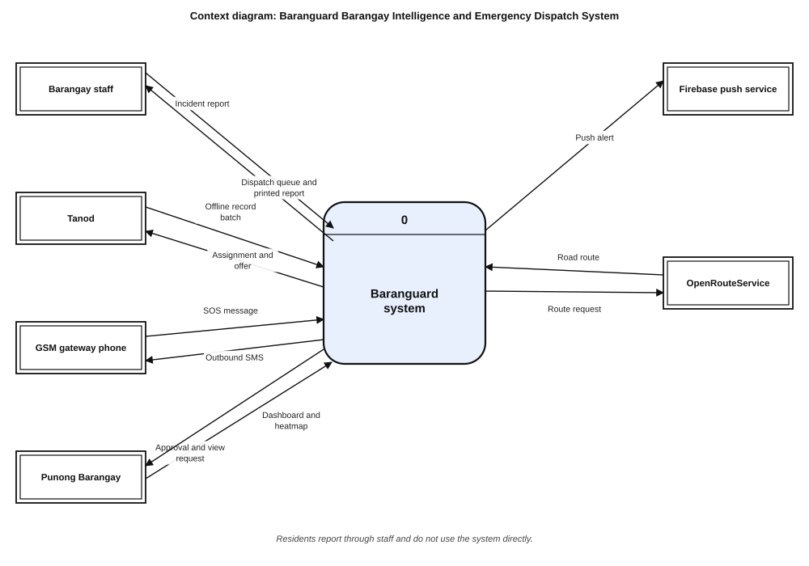
Figure 4-4 presents Diagram 0, the explosion of the context process into seven processes, named by verb and noun: record incident reports, dispatch assigned tanods, synchronize offline records, relay SOS alerts, track and analyze incidents, prepare roster and reports, and control access and audit. The number of processes stays under the limit of nine. Each process has at least one input and one output, and each data store, D1 to D7, is connected to at least one process; stores are reached only through processes and never directly by an entity. The inputs and outputs of Diagram 0 are the same as those of the context diagram. The seven processes are not exploded further in this manuscript, so they are the primitive processes of the study.
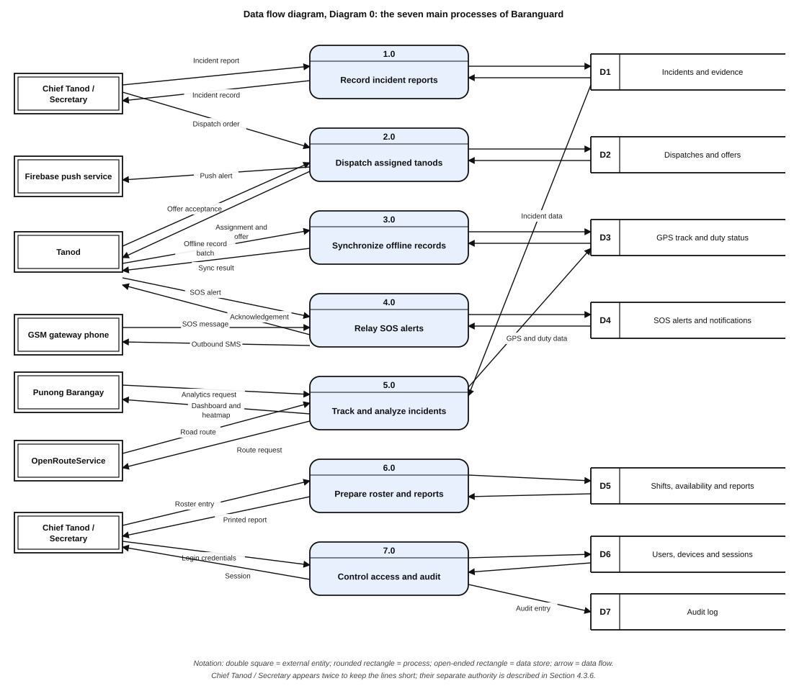
Note. The Barangay staff entity is drawn twice to keep the lines short. Dispatch alerts by SMS leave through process 4.0 and push alerts through process 2.0.
Figure 4-5 presents the use cases by actor. The Chief Tanod, the Secretary, the Punong Barangay and the tanod have separate groups of use cases, and the groups overlap only where the system deliberately shares a function, such as viewing an incident. The privileges behind the diagram are given in full in Table 4-11.
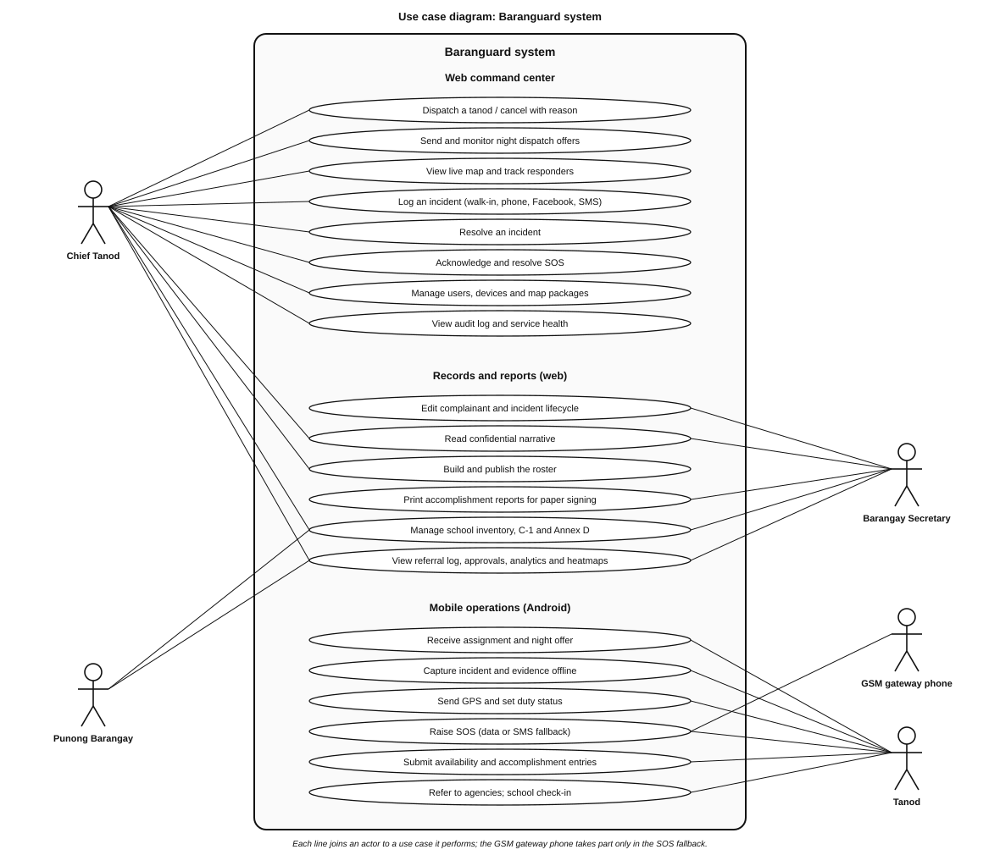
Figure 4-6 presents the process flow of the main transaction, from the receipt of a report to the closing of the incident. A tanod phone saves a new incident in its encrypted store before anything else, so a lost connection delays the record and does not lose it. On the server the incident receives its code and is stored as Pending. By day the Chief Tanod assigns a rostered tanod, and between 18:00 and 06:00 the system offers the incident to on-duty tanods, who each have 180 seconds per round, for three rounds, with the first acceptance assigned. The tanod then receives the route, shares position and marks arrival, and the Chief Tanod resolves the incident.
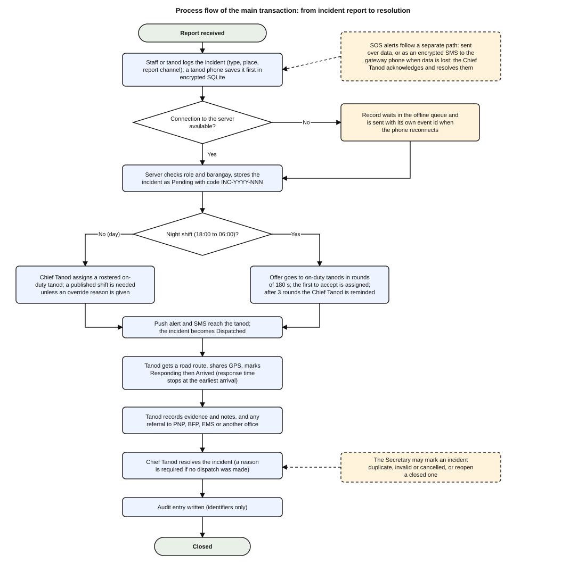
4.3.3 Database Design
Figure 4-7 presents the entity-relationship diagram in Crow's Foot notation. It was generated from the foreign keys and column definitions of the running database; the incident_referral table, added by the latest migration, was added to the diagram by hand from the same column definitions, and its links to the user and barangay tables are not drawn. It shows 19 of the 34 tables, the core of the incident, dispatch, responder, roster and school-zone data. The other tables hold sessions, notification delivery, settings, retention, rate limits and synchronization data.
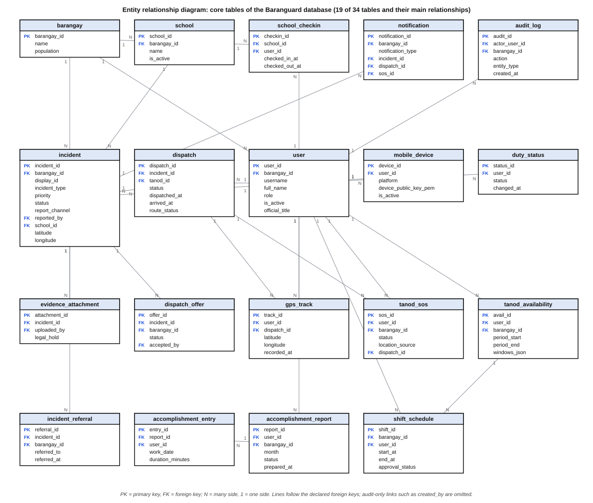
The entities fall into four groups. Organisation: barangay separates the four barangays, and user holds the accounts, with a role and, for officials, the title printed under a signature. Incident handling: incident is the central record, which dispatch, dispatch_offer, evidence_attachment and notification refer to; tanod_sos and gps_track hold alerts and positions. Field personnel: mobile_device, duty_status, tanod_availability and shift_schedule describe who can be sent where and when, and accomplishment_report with accomplishment_entry holds the monthly report. School zones and accountability: school and school_checkin hold the Annex B inventory and check-ins, and audit_log records who did what.
The cardinalities follow the business: one barangay has many incidents, users and schools; one incident has many dispatches, because a second responder may be sent; a user has many GPS fixes and shifts; and an accomplishment report has many entries. A circle on the many side marks a foreign key that may be empty, as with incident.reported_by, which stays empty for a report that did not originate from a tanod. Table 4-9 presents an extract of the data dictionary for the two central tables, and the complete dictionary of all 34 tables is in Appendix B.
| Table | Field | Data type | Null | Key | Description |
|---|---|---|---|---|---|
| incident | incident_id | bigint unsigned | No | PK | Internal identifier of the incident. |
| barangay_id | smallint unsigned | No | FK | Barangay that owns the record; every query is limited to it. | |
| display_id | varchar(20) | Yes | Official code INC-YYYY-NNN, numbered per barangay and year. | ||
| incident_type | enum (11 values) | No | Category such as theft, fire or medical emergency. | ||
| priority | enum | No | normal, high or critical. | ||
| status | enum (7 values) | No | pending, dispatched, resolved, duplicate, invalid, cancelled or reopened. | ||
| report_channel | enum (6 values) | No | How the report reached the barangay: tanod alerted, walk-in, SMS, phone call, Facebook or other. | ||
| reported_by | bigint unsigned | Yes | FK | Account that logged the incident. | |
| latitude, longitude | decimal(10,7) | Yes | Location of the incident, when known. | ||
| raw_narrative | text | Yes | Confidential description; never sent in a notification and destroyed after one year. | ||
| related_incident_id | bigint unsigned | Yes | FK | Link to a related or duplicate incident; the other record is never changed or deleted. | |
| resolve_reason | varchar(255) | Yes | Reason, required when an incident is resolved without a dispatch. | ||
| created_at | datetime | No | Time of creation, stored in UTC. | ||
| dispatch | dispatch_id | bigint unsigned | No | PK | Identifier of one assignment of a tanod to an incident. |
| incident_id | bigint unsigned | No | FK | The incident the tanod was sent to. | |
| tanod_id | bigint unsigned | No | FK | The assigned tanod's account. | |
| status | enum (5 values) | No | assigned, en_route, arrived, completed or cancelled. | ||
| dispatched_at | datetime | No | Time of assignment. | ||
| arrived_at | datetime | Yes | Time of arrival; the earliest one per incident ends the response time. | ||
| route_status | enum | No | available, unavailable or stale, so the screen states whether the route is current. | ||
| cancel_reason | varchar(255) | Yes | Reason, required when a dispatch is cancelled. |
Note. Extracted from the live database schema. Reasons are stored on the record and never copied into the audit log, which keeps identifiers only.
The extract shows the design choices that distinguish the system from a paper record. The status is a controlled list, so an incident cannot have an undefined state. The code and the internal identifier are separate, so a purged incident's code is never issued again. The narrative has its own column, so it can be withheld from every other output and destroyed on schedule without touching the operational record.
4.3.4 System Modules and Walkthrough
The modules are presented in the order a user meets them. For each screen the walkthrough states the input, the processing and the output. All screens show simulated test data (see Section 3.3.3), so counts, response times and positions on them demonstrate that the screens work and are not measured results of real use. The header notice "Some services need attention" is the system reporting honestly that push notifications and the gateway phone were not set up on the machine used for the screenshots (see Service Health).
Figure 4-8 presents the login screen. The user enters a username and a password. The server checks the credentials, limits repeated failed attempts, and issues a session that lasts 15 minutes of inactivity on the web and is checked against the session table on every request, so a suspended or signed-out account stops working at once. The user then lands on the home screen allowed for the role; a tanod who signs in on the web sees a page stating that the web has no screen for the role.
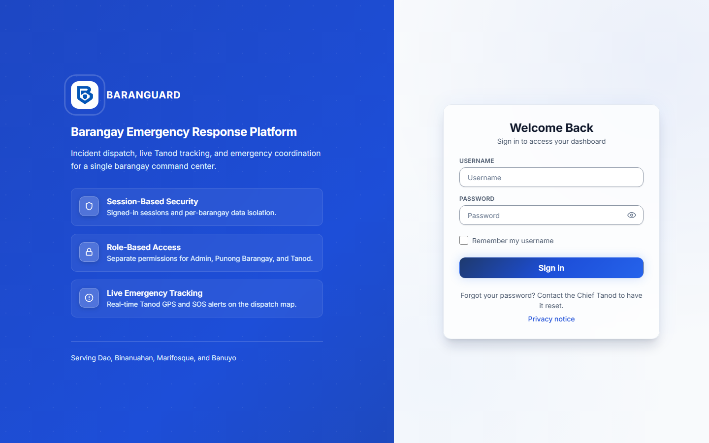
Figure 4-9 presents the Admin dashboard of the Chief Tanod. It needs no input. The system counts the pending and reopened incidents, groups the incidents by day and by type, counts the tanods on duty and computes the average response time from the stored arrival times. The Chief Tanod gets a one-screen picture of the barangay's current load.
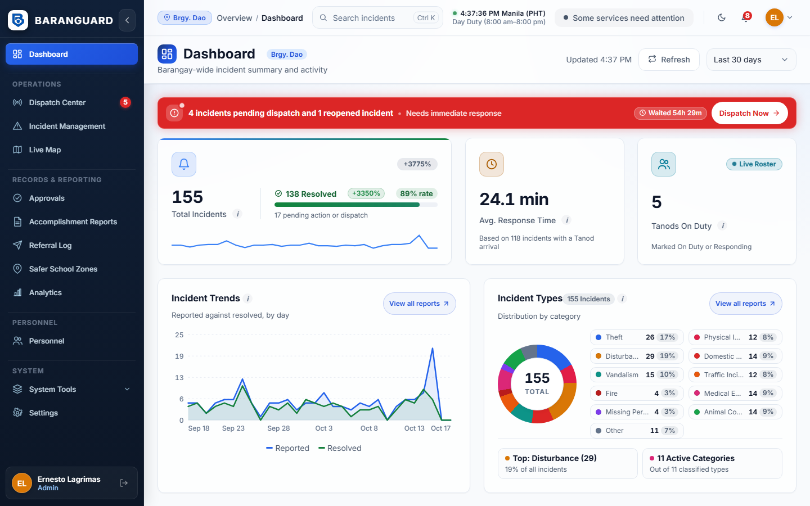
Figure 4-10 presents the Dispatch Center. The Chief Tanod, or the Secretary as back-up dispatcher, selects an incident from the emergency queue and chooses an on-duty tanod, or at night sends an offer to the on-duty tanods. Before saving, the system checks that the tanod is not already assigned, that a published shift covers the time unless an override reason is given, and that the 12-hour daily limit is respected. It then stores the dispatch, sets the incident to Dispatched, sends a push alert and SMS to the tanod, and shows the assignment, the incident pin and the route on the map. This screen implements FR-03 and addresses problem P2 of Table 4-1.
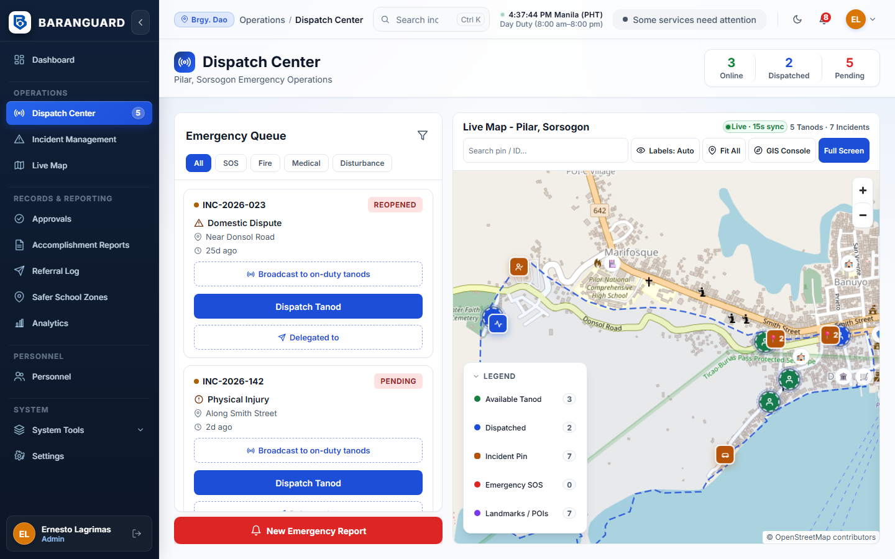
Figure 4-11 presents the Live Map. The screen needs no input and refreshes by polling every 15 seconds. The system returns the latest GPS fix of each on-duty tanod and the age of that fix, and draws them with the open incidents, the SOS alerts and the landmarks inside the barangay boundary. The Chief Tanod sees where each tanod was last reported, and how old that report is, so the position is never presented as more current than it is. This screen addresses problem P3.
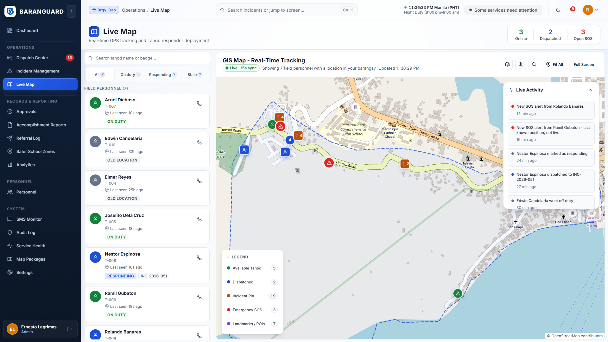
Figure 4-12 presents Incident Management. The staff member searches by text and filters by status, priority and date. The system returns only the records of the user's own barangay, with the incident code, location, priority, status, assigned tanod and the report channel shown as a badge. The list has no narrative, which is shown only on the detail screen to the roles allowed to read it.
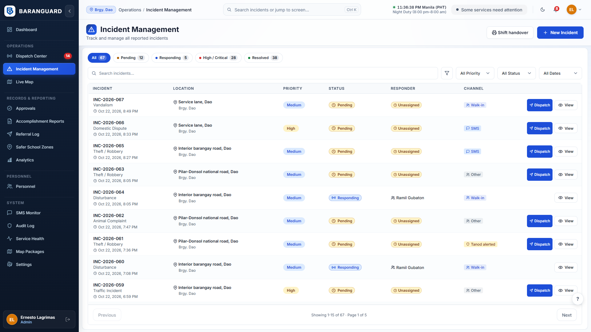
Figure 4-13 presents the Log an Incident form. The staff member selects the type, the priority and the report channel, types the landmark, optionally the complainant's name and the nearby school, and describes the incident. The system validates the fields, stores the incident as Pending under a code of the form INC-YYYY-NNN, and writes the narrative to its own protected column. The incident appears in the list and the Dispatch Center queue at once. The form implements FR-01.
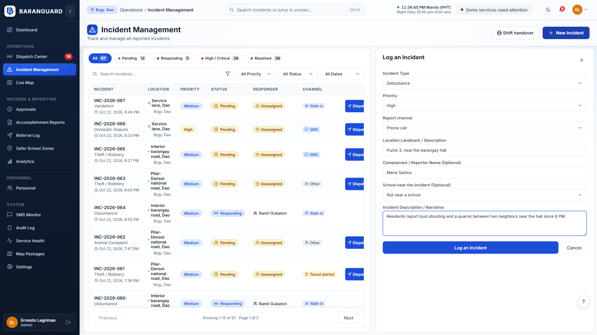
Figure 4-14 presents the incident detail pane. It shows the location, the time and source of the report, the assigned tanod, the description and the timeline. The Chief Tanod and the Secretary, as back-up dispatcher, may assign a tanod or resolve the incident, and the Secretary, who is also the records custodian, may mark a record as duplicate, invalid, cancelled or reopened. A duplicate is linked to the original and never deleted. The description is shown only to the Secretary and to the Chief Tanod on the web, and each reading is written to the audit log with identifiers only.
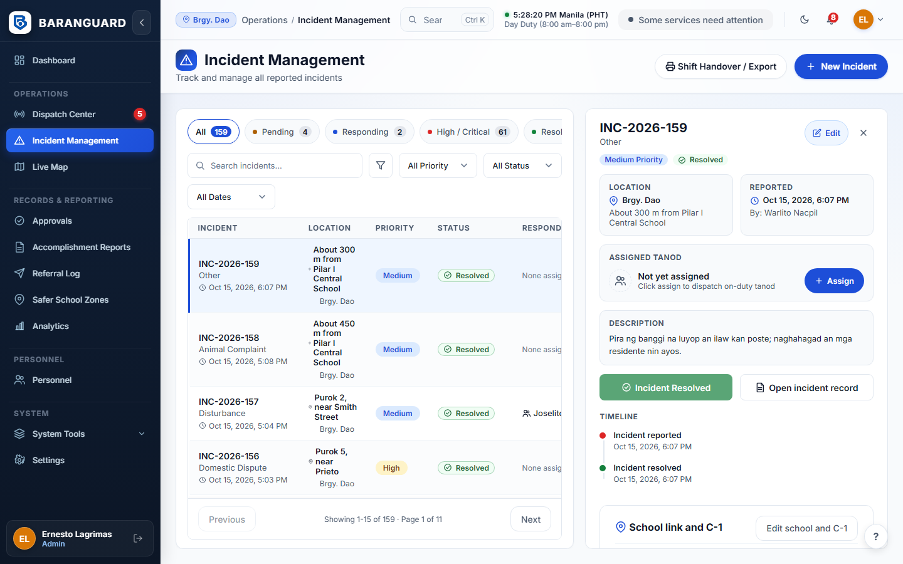
Figure 4-15 presents the Scheduler of the Personnel module. The Chief Tanod or the Secretary adds a standard shift to a tanod on a day of the week grid, or copies the previous week, and the grid shows the availability each tanod gave, the hours per tanod and warnings. The system rejects a shift that would put a tanod over 12 hours in a day, saves new shifts as drafts, and shows them to tanods only after the week is published. Availability is optional: a tanod who gave none can still be scheduled.
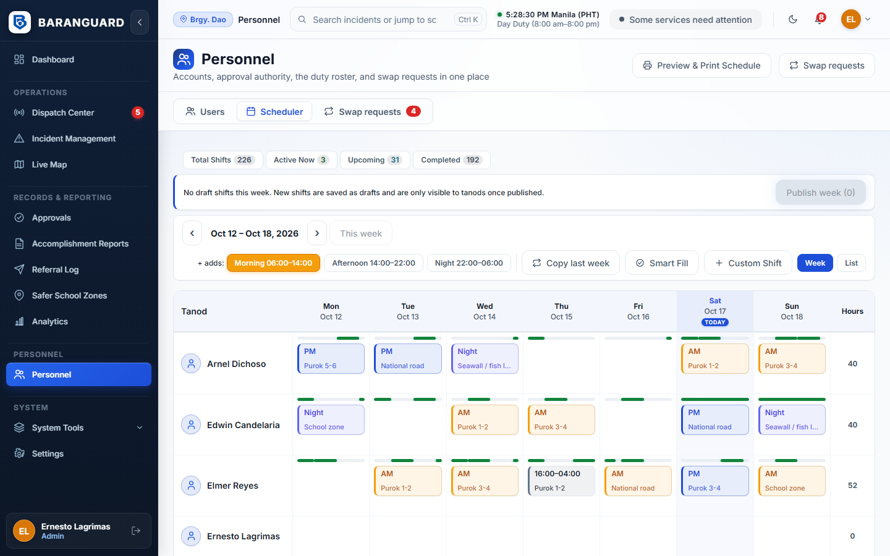
Figure 4-16 presents the Reports tab of Analytics. The official chooses a date range. The system counts the incidents and the resolved share, computes the average response time as the interval from creation to the earliest arrival per incident over the incidents that had an arrival, and states the busiest day, the commonest type and the peak hour. The screen can be printed or exported. It implements the statistical part of FR-06 and stays within the oversight role of the Punong Barangay, who sees counts and trends but no case list.
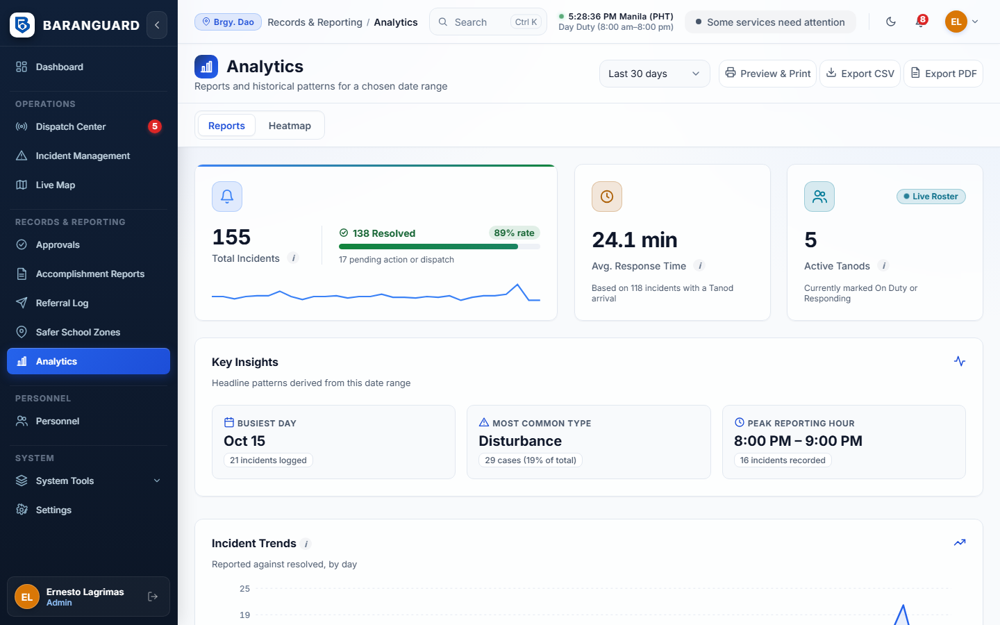
Figure 4-17 presents the Heatmap tab. The official chooses the period and the incident category. The system plots every incident that has a location on the map of the barangay, inside its boundary, and ranks the categories. The screen states that it shows historical patterns only and is not a prediction. The result helps decide where to place patrols and implements the heatmap part of FR-06.
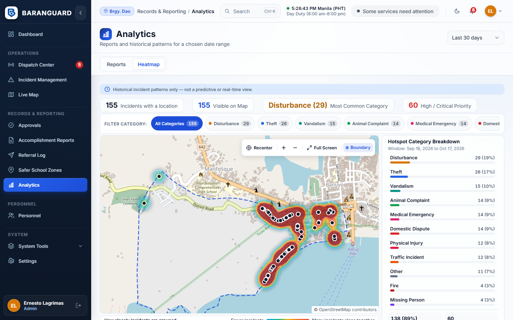
Figure 4-18 presents the Approvals screen. The official sees what waits for a decision: shifts awaiting publication, accomplishment reports that are prepared, and the Annex D term report to prepare. The system states the paper-first sequence, which is to print, sign on paper and then publish the week, and records the result of the publication. This screen addresses problem P5 and reflects the decision that the signed paper is the approval.
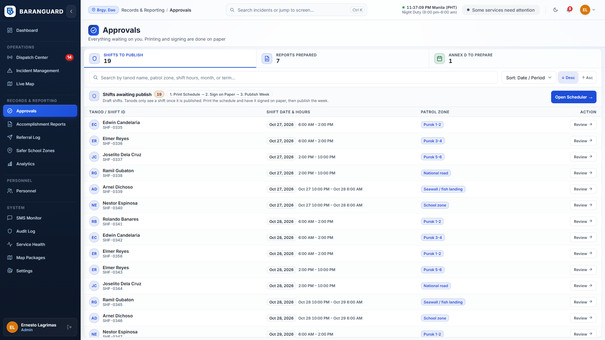
Figure 4-19 presents the Accomplishment Reports screen. The Secretary or an official with the proper authority filters the monthly reports of the tanods by month and status. Each report is built from the entries the tanod encoded on the phone, with the duration the tanod confirmed. The system compares each duration with the time computed from the tanod's duty status and flags the entries that differ by more than 30 minutes, which are shown in the Flagged column. The report is printed for signing, or returned to the tanod with a reason.
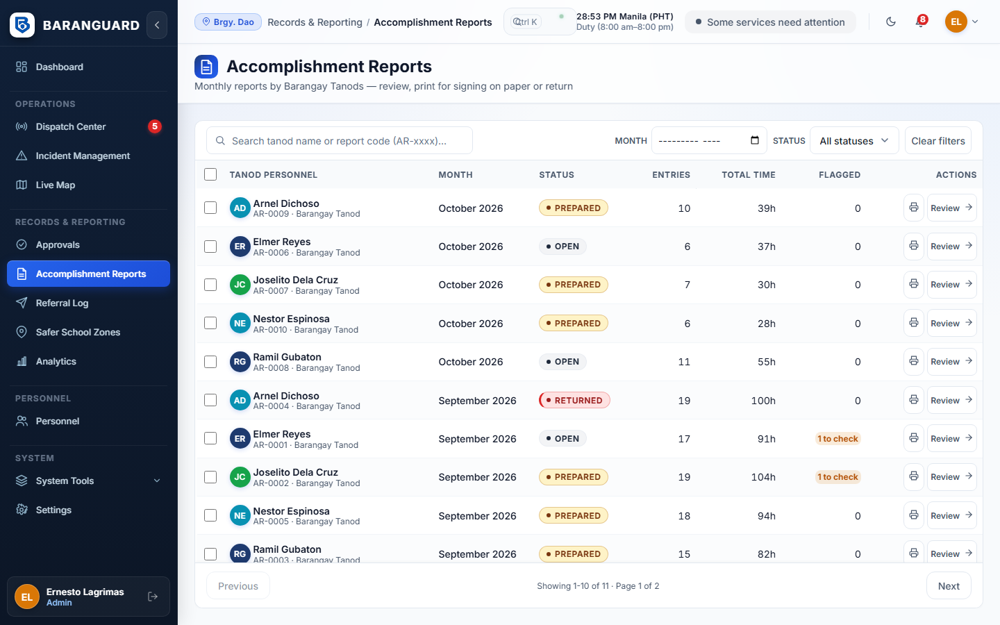
Figure 4-20 presents the Safer School Zones module. The Secretary encodes each school with its classification and focal person, and the system prints the Annex B inventory, the Annex C-1 summary per incident and the Annex D term report from live counts. The printouts carry a Draft layout notice, because the circular's own text was not available to the team when the layouts were made.
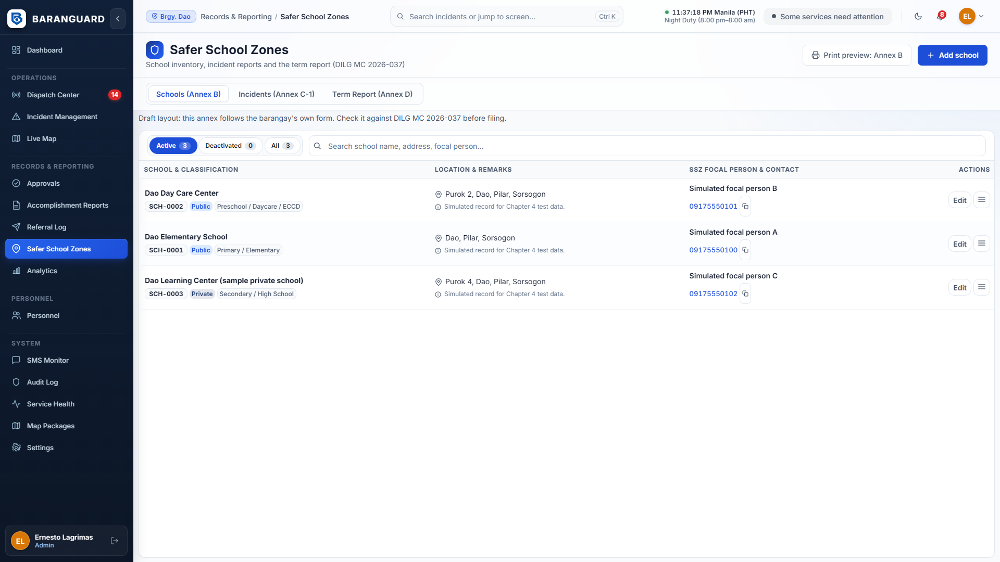
Figure 4-21 presents the Referral Log. It lists the incidents that were referred to the police, the fire service, emergency medical services and other offices, with the date and the agency's reference number. The Lupon or Katarungang Pambarangay is one of the destinations, as a barangay-level office. The system keeps the log as a record of delegation only: it has no narrative, names or contacts, so it does not become a case registry that would duplicate the DILG BIMS.
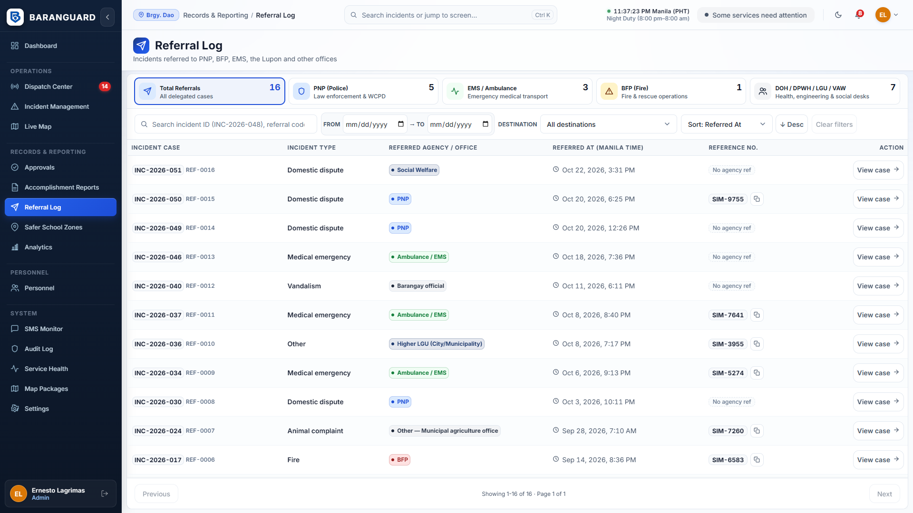
The Tanod Mobile Application is presented in Appendix A, Figures A-1 to A-3. A tanod sees a home screen with the duty status and the emergency button, a log of the incidents and records captured, and the assignments received. The tanod saves every record to the phone before leaving the screen, the record stays in an offline queue marked as not yet synchronized, and it is sent with its own event identifier when the connection returns, so a repeated send returns the original record and never creates a second one. When the data connection is lost, the SOS button sends an encrypted SMS with the last known position to the gateway phone, and a plain message to one backup contact. The Chief Tanod's phone console also has a Log an incident form for reports that arrive by phone call or Facebook message when the Chief Tanod is away from the desk: it is saved on the phone first and sent when there is a connection. These screens implement FR-01, FR-02 and FR-05 and address problem P4.
4.3.5 Business Rules and Key Algorithms
Table 4-10 presents the non-obvious rules the system enforces. Each rule is enforced on the server, so no client can bypass it, and each is exercised by at least one of the automated suites in Section 4.3.8.
| Code | Rule |
|---|---|
| BR-01 | An incident code has the form INC-YYYY-NNN. It is numbered per barangay and per Manila year as the highest existing number plus one, inside the insert's transaction, so a purged incident's number is never issued again. |
| BR-02 | An incident may have several concurrent active dispatches. Cancelling a dispatch needs a reason and returns the incident to Pending only if no other active dispatch remains. |
| BR-03 | A dispatch needs a published shift covering the current time, unless an override reason is given. No tanod may be scheduled for more than 12 hours in a Manila day. |
| BR-04 | Between 18:00 and 06:00 Manila time an incident is offered to on-duty tanods. A round lasts 180 seconds, there are three rounds, the first acceptance is assigned, and after the third round the Admin receives reminders. |
| BR-05 | Every offline write carries a client event identifier. A repeated write returns the original record. A synchronization batch processes the record kinds in a fixed order, and the SOS kind is never rejected. |
| BR-06 | An SOS is never refused for a missing GPS fix. It uses the live coordinates, else the last known fix labelled as such, else it is stored with no location. |
| BR-07 | A resource of another barangay, or one the user does not own, answers as not found and never as forbidden, so its existence is not confirmed. |
| BR-08 | The Admin resolves a dispatched incident. A pending or reopened incident that needed no dispatch can be resolved only with a reason of 1 to 255 characters. |
| BR-09 | Only the Secretary marks an incident duplicate, invalid, cancelled or reopened. A duplicate is linked and never deleted, and a closed state can be left only by reopening. |
| BR-10 | A stored route is reused when the same tanod asks again within 90 seconds and 40 metres. After an outage or an exhausted quota the routing service is not called for 120 seconds, and the screen shows the last route as stale or a labelled straight line. |
| BR-11 | An accomplishment entry must be dated no later than today and no more than 62 days back, with a duration of 1 to 1,440 minutes. It is flagged when it differs from the duration computed from duty status by more than 30 minutes. |
| BR-12 | A confidential narrative is permanently destroyed after one year. A legal hold stops all destruction. The retention periods of the newer tables are provisional and their purge is off. |
| BR-13 | A web session ends after 15 minutes of inactivity. A tanod phone session lasts 24 hours of activity with a hard limit of 7 days. Both end on the next request after sign-out, suspension or a password change. |
| BR-14 | Audit entries hold identifiers and statuses only, never a narrative, a credential, a coordinate or a personal detail. |
| BR-15 | The Secretary is the back-up dispatcher: on the web the Secretary may assign or cancel a dispatch, open or cancel a night offer, resolve an incident and acknowledge or resolve an SOS. The Secretary has no phone device session, and all of these actions are audited like the Admin's. |
| BR-16 | A report logged from the Chief Tanod's phone is written to the encrypted phone store first, sent with its own idempotency key, and removed from the phone once the server confirms. A resend never creates a second incident. |
Together the rules turn the open points of the manual process into checks. BR-03 and BR-04 replace the series of telephone calls with a rule that always yields one assigned tanod, BR-05 and BR-06 make the field application safe to use at the edge of the network, and BR-07, BR-12 and BR-14 are the controls behind the data privacy requirement NFR-03.
4.3.6 Security and Access Control
Access follows four roles. Table 4-11 presents the privileges of each. Approval authority, such as the right to publish a roster, is a separate attribute that the Admin gives to a named official; it is not a fifth role.
| Function | Admin (Chief Tanod) | Secretary | Punong Barangay | Tanod |
|---|---|---|---|---|
| Log an incident | Yes (web and phone) | Yes | No | Yes (phone) |
| Read the narrative and the complainant's name | Yes (web only) | Yes | No | No |
| Edit priority, type and location | Yes | Yes | No | No |
| Edit the complainant's name | No | Yes | No | No |
| Mark an incident duplicate, invalid, cancelled or reopened | No | Yes | No | No |
| Resolve an incident | Yes | Yes (back-up) | No | No |
| Assign a tanod or send a night offer | Yes | Yes (back-up) | No | No |
| Accept an assignment and report status | No | No | No | Yes |
| Raise an SOS | No | No | No | Yes |
| Acknowledge and resolve an SOS | Yes | Yes (back-up, web) | No | No |
| View the live map, heatmap and analytics | Yes | No | Yes | No |
| Create and edit draft shifts | Yes | Yes | No | No |
| Publish a roster (needs the approval authority) | If granted | If granted | If granted | No |
| Encode accomplishment entries and check in at schools | No | No | No | Yes |
| View and print accomplishment reports, the referral log and school zones | Yes | Yes | Yes (view) | Own entries only |
| Manage users, devices and approval authorities | Yes | No | No | No |
| View the audit log, service health and SMS monitor | Yes | No | No | No |
Note. The matrix reflects the role checks in the API and the menu of the dashboard. An Admin signed in on a phone gets a limited device session that cannot read the narrative. The Secretary sees the live map only inside the Dispatch Center and has no phone session.
Table 4-11 shows that no role holds every function. The Chief Tanod dispatches and resolves but cannot change the records custodian's decisions, the Secretary keeps the records and can dispatch only as the Chief Tanod's back-up, and the Punong Barangay oversees through counts and trends and sees no case list. Every request is checked on the server for role, barangay and ownership, a cross-barangay request answers as not found, and the web interface hides what a role may not do only as a convenience. Passwords are stored as hashes and sessions are revocable. On the phone, data is held in an encrypted SQLite database and each write is signed with a key held on the device. The SOS message is encrypted before it is sent, and no notification, SMS or log carries a narrative.
4.3.7 Deployment Environment
Table 4-12 presents the hardware and software on which the system was run and tested, with versions. The development and the deployment environment are the same workstation, because the system was built on the machine that serves as the administrative workstation. The intended deployment is one workstation per barangay, each with its own database, behind a UPS, with an encrypted backup copied offsite and a written power-cut procedure. Installation on each barangay's own workstation is pending.
| Component | Specification or version |
|---|---|
| Administrative workstation | Intel Core i5-1235U, 7.7 GB RAM, Intel Iris Xe graphics |
| Operating system | Windows 11 Home |
| Web server and database | Apache 2.4.58 and MariaDB 10.4.32 (XAMPP) |
| Application server | PHP 8.2.12; Node.js 24.14.0 for command-line tools only |
| Web dashboard | Vanilla JavaScript; MapLibre GL 4.7.1 vendored; tested in desktop Google Chrome |
| Mobile application | Ionic React 9, React 19.0, Capacitor 8.5.1, SQLite plugin 8.1.1 with SQLCipher, MapLibre GL 6.9, TypeScript 5.9, Vite 8 |
| Android build | Compile and target SDK 36, minimum SDK 24, Gradle 8.14.3, JDK 21 |
| Remote access | Cloudflare tunnel (cloudflared 2026.9.3) on baranguardph.win and api.baranguardph.win |
| Test phones | Infinix X6840 and Samsung Galaxy A21s |
| SMS gateway | An Android phone with its own SIM, connected by USB to the workstation |
| Deployment model | One workstation per barangay (four deployments), UPS for the workstation and router, offsite encrypted backup |
| Source control | Git 2.53, repository on GitHub |
The environment is modest on purpose. The workstation is a consumer laptop and the field device is a low-cost Android phone, which is the hardware a barangay can realistically provide. The test phones are two models, which limits what the study can say about other manufacturers' battery policies (Section 4.4.5).
4.3.8 Testing Results
The system was tested at four levels, from the smallest unit up to the users. Table 4-13 presents the cases executed and their results by level. Unit and component tests are the web render and unit tests and the mobile checks of the local database; integration tests are the backend suites, each of which creates a disposable database and a temporary server and calls the API over real HTTP requests. System testing on field phones and user acceptance testing have not been carried out, and their rows are pending.
| Test level | Cases executed | Passed | Failed | Pass rate |
|---|---|---|---|---|
| Unit and component testing (web 734, mobile 259) | 993 | 993 | 0 | 100.00 percent |
| Integration testing (38 backend suites) | 1,795 | 1,795 | 0 | 100.00 percent |
| System testing (field phones, outage scenarios) | pending | pending | pending | pending |
| User acceptance testing (92 cases listed) | pending | pending | pending | pending |
| Total of the levels executed | 2,788 | 2,788 | 0 | 100.00 percent |
Note. Pass rate is cases passed divided by cases executed, multiplied by 100. A case is one numbered check printed by a suite, so the counts are checks and not scripts. Verification of the total: 993 plus 1,795 equals 2,788 passed out of 2,788 executed. The mobile figure counts checks of the local schema and its migrations; the static type check and lint of the mobile code ran without errors.
Table 4-13 indicates that all executed checks passed. This is a statement about code correctness and specified behavior, not about the quality the users perceive, and it does not cover system testing on phones or acceptance by users, which are the levels that would reveal an unexpected defect. Table 4-14 breaks the integration level down by the quality area each suite exercises.
| Area | Suites | Checks passed | Checks failed |
|---|---|---|---|
| Command center, dispatch, GIS and incident handling | 10 | 213 | 0 |
| Offline-first capture, synchronization and devices | 7 | 314 | 0 |
| SMS fallback and notifications | 3 | 88 | 0 |
| Security, access control and audit | 10 | 484 | 0 |
| Tanod workflow, rosters and reports | 6 | 505 | 0 |
| Data retention | 2 | 191 | 0 |
| Total | 38 | 1,795 | 0 |
Note. Counts are the checks printed by each suite when it was last run on 17 October 2026. A suite that prints only "all checks passed" without a number is counted in the Suites column and not in the Checks column. No suite reported a failed check.
The groups cover each objective: the first group the command center and dispatch (objective 1), the second the offline capture and synchronization (objective 2), the third the SMS fallback and notifications (objective 3), and the fourth the security tests that the evaluation of Security and Safety rests on. The wiring check of the web dashboard, which verifies imports, stylesheet classes and typography rules, reports 936 passing checks and 30 findings in stylesheets that are still being revised; these are listed as a deferred defect in Table 4-18.
The response time of the key read endpoints was measured as described in Section 3.3.3. The script was run on the administrative workstation against the demonstration database, which held 159 incidents, 134 dispatches and 3,233 GPS fixes. It issued 40 requests per endpoint one after another after 5 warm-up requests, and the single login took 326.1 ms. Table 4-15 presents the results.
| Endpoint | Median | 95th percentile | Maximum | Failures |
|---|---|---|---|---|
| GET /gps/live | 35.8 | 51.8 | 53.1 | 0 |
| GET /incidents | 28.4 | 51.8 | 57.4 | 0 |
| GET /dispatch | 36 | 50.1 | 53.8 | 0 |
| GET /reports/summary | 40.7 | 57.5 | 59.5 | 0 |
| GET /reports/heatmap | 32.6 | 47.9 | 66.1 | 0 |
Note. Round trip from the same machine over the loopback interface, one request at a time. It measures server time without network delay and without page rendering, and it does not measure many simultaneous users.
Every endpoint answered well under the two-second criterion of NFR-01 and Section 3.3.4, and the slowest 95th percentile was 57.5 ms. This indicates that, for one user on this hardware and a database of this size, server time is not a limit for the dashboard. It does not show the behavior with several dispatchers at once, with a database grown over years, or on a tanod's mobile connection. The dashboard refreshes by polling every 15 seconds, so a position on the map is at most the delivery delay plus 15 seconds old, which is why the system describes its tracking as near-real-time.
The field measurements and the user acceptance test remain to be carried out. Table 4-16 presents the measures that will be reported once the tanods have used the system and the SMS fallback has been exercised on real phones, and Table 4-17 presents the acceptance cases by scenario part. The criterion for the acceptance test is a pass rate of at least 90 percent with every critical defect resolved.
| Measure | How it is computed | Result |
|---|---|---|
| GPS fix delivery delay | Server time minus the time recorded on the phone, for live fixes | pending |
| Interval between fixes per tanod | Gap between consecutive fixes | pending |
| Offline incident to server delay | Synchronization time minus offline creation time | pending |
| Synchronization outcome | Share of batches that succeed, repeat or fail | pending |
| SOS trigger to server delay | Server time minus trigger time, by channel (data or SMS) | pending |
| SMS fallback success | Messages that become an SOS on the dashboard out of 20 simulated disconnections on three Android models | pending (criterion: at least 19 of 20) |
| Dispatch response time | Incident creation to the earliest responder arrival, once per incident | pending |
| Scenario part | Cases listed | Executed | Passed | Failed |
|---|---|---|---|---|
| B. Tanod (Android) | 30 | pending | pending | pending |
| C. Chief Tanod (web) | 23 | pending | pending | pending |
| D. Chief Tanod (phone console) | 7 | pending | pending | pending |
| E. Secretary (web) | 22 | pending | pending | pending |
| F. Punong Barangay (web) | 10 | pending | pending | pending |
| Total | 92 | pending | pending | pending |
Note. Pass rate is cases passed divided by cases executed, multiplied by 100, where cases executed is passed plus failed.
Table 4-18 presents the defects found and corrected during the final verification pass of the build, classified by the development team. The defects of the user acceptance test and the field test are added when those tests are run.
| Severity | Found | Resolved | Deferred | Disposition of deferred items |
|---|---|---|---|---|
| Critical | 0 | 0 | 0 | None |
| Major | 2 | 2 | 0 | None |
| Minor | 5 | 4 | 1 | 30 stylesheet findings (undefined classes and font rules in recently edited styles), to be cleared before release |
| Cosmetic | 2 | 2 | 0 | None |
| Total | 9 | 8 | 1 | One minor item carried to the recommendations |
Note. Major: the Incident Management page failed to load because of an undefined icon; the road-route health check and route requests used up the daily quota of the routing service. Minor: the Live Map counts differed from the Dispatch Center; demonstration pins were not on real roads; two defects in test scripts (a one-second timing tolerance and a missing parameter); the deferred stylesheet findings. Cosmetic: the sort control of the Approvals toolbar was clipped; too many type families were in use. All are recorded in the development log with their causes.
The defect counts differ from the number of failed checks in Table 4-13 because the two were found by different means: the defects came from reviewing the screens and the final verification runs, and their corrections were made before the suites were last run, so the suites report no failure. Both major defects were found before any user met the system, which is the purpose of the verification pass. The unresolved risks are the ones that need a device: the full-screen critical alert for night offers was written and checked for syntax but not yet compiled and run on a phone.
4.4 Evaluation Result
This section reports how the evaluators rated the system against the quality standard declared in Section 3.3.2. The edition used throughout the manuscript is ISO/IEC 25010:2023, which defines nine product quality characteristics: Functional Suitability, Performance Efficiency, Compatibility, Interaction Capability, Reliability, Security, Maintainability, Flexibility and Safety. Compared with the 2011 edition, Safety was added, Usability became Interaction Capability and Portability became Flexibility. All nine characteristics were evaluated. The forms were built on the 2023 edition, and the 2011 terms are not used.
4.4.1 Evaluators
Table 4-19 presents the groups that evaluated the system, their number and the basis for including each group. All 27 evaluators are external to the development team. Because the first four characteristics are within the experience of every group, all evaluators rated them, while Compatibility, Security, Maintainability, Flexibility and Safety need technical knowledge and were rated by the three IT experts only.
| Group of evaluators | Number | Percentage | Basis for inclusion |
|---|---|---|---|
| Barangay tanods | 12 | 44.44 | Daily field users of the mobile application |
| Chief Tanod | 4 | 14.81 | Dispatchers who use the Dispatch Center, live map and roster |
| Barangay Secretary | 4 | 14.81 | Records custodians accountable for incident records and reports |
| Punong Barangay | 4 | 14.81 | Executive users of the dashboard, analytics and approvals |
| IT experts | 3 | 11.11 | Able to assess the technical characteristics that users cannot |
| Total | 27 | 100.00 |
Note. The numbers are those planned in Table 3-7 and are confirmed when the survey is complete. Verification: 12 plus 4 plus 4 plus 4 plus 3 equals 27. The exact shares sum to 100.00 percent; the rounded figures in the column add to 99.98 because of rounding.
4.4.2 Scale, Formula and Worked Computation
Table 4-20 reproduces the scale declared in Section 3.3.2 and used on the four evaluation forms.
| Scale | Range of means | Verbal interpretation | Meaning in this study |
|---|---|---|---|
| 5 | 4.21 to 5.00 | Excellent | The characteristic is fully satisfied, with no observed deficiency. |
| 4 | 3.41 to 4.20 | Very Satisfactory | The characteristic is satisfied, with minor room for improvement. |
| 3 | 2.61 to 3.40 | Satisfactory | The characteristic is met at an acceptable level. |
| 2 | 1.81 to 2.60 | Fair | The characteristic is partially met and needs improvement. |
| 1 | 1.00 to 1.80 | Poor | The characteristic is not met. |
The weighted mean is computed as the sum of the products of each frequency and its weight, divided by the number of evaluators, WM = Σ(f × w) / n, where f is the number of evaluators who chose a rating, w is its weight and n is the number of evaluators who rated. The mean is rounded to two decimal places throughout. Table 4-21 shows the layout of the computation for one indicator with n equal to 27; the frequencies are entered from the returned forms.
| Rating | Weight (w) | Frequency (f) | Product (f × w) | Running total |
|---|---|---|---|---|
| Excellent | 5 | pending | pending | pending |
| Very Satisfactory | 4 | pending | pending | pending |
| Satisfactory | 3 | pending | pending | pending |
| Fair | 2 | pending | pending | pending |
| Poor | 1 | pending | pending | pending |
| Total | 27 (must equal n) | pending |
4.4.3 Summary of Evaluation Results
Table 4-22 presents the weighted mean, the verbal interpretation and the rank of each characteristic, with the number of evaluators who rated it. The overall weighted mean is the mean of the nine characteristic means, so the table can be checked by adding the nine means and dividing by nine.
| Quality characteristic | Evaluators (n) | Weighted mean | Verbal interpretation | Rank |
|---|---|---|---|---|
| Functional Suitability | 27 | pending | pending | pending |
| Performance Efficiency | 27 | pending | pending | pending |
| Compatibility | 3 | pending | pending | pending |
| Interaction Capability | 27 | pending | pending | pending |
| Reliability | 27 | pending | pending | pending |
| Security | 3 | pending | pending | pending |
| Maintainability | 3 | pending | pending | pending |
| Flexibility | 3 | pending | pending | pending |
| Safety | 3 | pending | pending | pending |
| Overall weighted mean | pending | pending |
Note. n is the number of evaluators planned for each characteristic. Five characteristics are rated by the three IT experts only, so their means rest on three ratings and are reported with that qualification.
The survey results are read together with the measured evidence that already exists for each characteristic. For Functional Suitability it is the automated suites and the user acceptance test (Tables 4-13 and 4-17); for Performance Efficiency the response times (Table 4-15); for Compatibility the JSON over HTTPS interface, Android 7.0 and above and two test phone models; for Reliability the offline and duplicate suites and the field measures (Table 4-16); for Security the tenant, role and session suites (Table 4-14); for Maintainability the numbered migrations, the test suites and the decision log; for Flexibility the four barangays served by one deployment; and for Safety the SOS without a GPS fix and the duplicate alert handling.
4.4.4 Interpretation of the Results
The interpretation is written after Table 4-22 is complete and has four parts: the highest-rated characteristic and the design decision that explains it; the lowest-rated characteristic and its probable cause, stated honestly; what the overall result means for deployment against the acceptance criteria of Section 3.3.4; and a comparison with the evaluations reported in Chapter 2 (Tosper et al., 2025; Gasmido et al., 2025). To be written when the results exist; it will not claim a statistical difference, because only descriptive statistics are used.
4.4.5 Discussion and Limitations
Against the objectives. The first three objectives are met in the sense that each was designed and implemented and that its behavior is verified by automated checks (Table 4-13). They are not yet shown to work in the conditions that motivated them. Whether the offline cycle and the SMS fallback work on field phones during a real outage, and whether tanods and officials find the system usable, are questions that only the field measurements, the acceptance test and Table 4-22 can answer. The fourth objective is prepared and not met.
Against the literature. The reviewed systems were administrative repositories (Tosper et al., 2025; Gasmido et al., 2025), and their evaluations reported ISO 25010 means above 4.5 for record-keeping tasks. Baranguard addresses the gap those studies left: dispatch, tracking and resilient communication for responders. It follows the recommendation of New Light Technologies (2024) to treat disconnected operation as the primary mode, and the finding of Omar and Van Belle (2023) that SMS is a useful but fallible alternative, which is why the fallback is described as best-effort and limited to emergency alerts.
Limitations and threats to validity.
- One workstation per barangay. Each barangay's system runs on one machine. If it is off, only the SMS alert to a backup contact still works, and the paper procedure takes over. A UPS and an offsite backup are recommended, but their cost and installation are outside this study.
- Synthetic data. Every measurement so far uses synthetic records. Real data will have a different size, shape and noise.
- One cloud dependency. Road routing depends on a third-party service with a daily request quota. The system degrades to a stored route or a labelled straight line, but a live road route is not guaranteed.
- Device coverage. The Android application has been run on two phone models. Vendor battery policies on other models may stop background location or delay messages.
- Thin technical sample. Five characteristics are rated by three IT experts, so their means are indicative only.
- Sample and evaluator bias. The respondents are chosen purposively. The baseline is observed while the post-deployment figure is instrumented, so the comparison is indicative only.
- Unconfirmed policies. Retention periods other than the one-year narrative rule are provisional until the barangay and the Commission on Audit confirm them, and the Safer School Zones annexes follow the barangay's own forms until DILG MC 2026-037 is checked.
References
Budimir, M., Bee, E., & Paul, J. (2021). Using mobile phone technologies for disaster risk management: Reflections from SHEAR. Science for Humanitarian Emergencies and Resilience. https://nora.nerc.ac.uk/id/eprint/530631/1/SHEAR_MobileTechs_v6.pdf
Department of Information and Communications Technology. (2024). The Philippine government's digital transformation through DICT's e-Government initiatives. DICT Official Publications. https://dict.gov.ph
Department of the Interior and Local Government. (2025). Local Government Unit Support System (LGUSS): Barangay Information Management System (BIMS). https://bims.dilg.gov.ph
Endsley, M. R. (1995). Toward a theory of situation awareness in dynamic systems. Human Factors, 37(1), 32–64. https://doi.org/10.1518/001872095779049543
Gasmido, W. L. J., De Guzman, J. T., Natividad, C. J. T., Sicuan, C. K. B. L., & Reyes, D. A. (2025). Digital Barangay: Ayos Lomboy's web-based management and information system. Psychology and Education: A Multidisciplinary Journal, 37(5), 424-431. https://doi.org/10.70838/pemj.370501
ISO/IEC. (2023). ISO/IEC 25010:2023, Systems and software engineering, Systems and software quality requirements and evaluation (SQuaRE), Product quality model. International Organization for Standardization.
Lardera, L. P., & Bagolong, S. (2026). Barangay information management system with automated mobile messaging for improved community engagement. International Journal on Science and Technology, 17(1), 1–12. https://www.ijsat.org/papers/2026/1/10412.pdf
Local Government Code of 1991, Republic Act No. 7160 (1991). https://lawphil.net/statutes/repacts/ra1991/ra_7160_1991.html
Longcop, L. B., & Fuentes, H. C. (2024). Profile, problems and needs of Barangay Health Emergency Response Team in Gamay, Northern Samar. International Journal of Research and Innovation in Social Science, 8(11). https://doi.org/10.47772/IJRISS.2024.8110022
MarketsandMarkets. (2024). Incident and emergency management market by solution, communication tools & devices, service, vertical and region, Global forecast to 2030 [Grey literature, commercial market research report]. MarketsandMarkets Research. https://www.marketsandmarkets.com
National Disaster Risk Reduction and Management Council. (2020, November 11). SitRep No. 12 re preparedness measures and effects for Super Typhoon "Rolly" (I.N. GONI). https://ndrrmc.gov.ph/attachments/article/4135/SitRep_no_12_re_STY_ROLLY_as_of_11NOV2020.pdf
National Privacy Commission. (2012). Republic Act No. 10173: Data Privacy Act of 2012. Government of the Republic of the Philippines. https://www.privacy.gov.ph
New Light Technologies. (2024). Building high-performance offline mobile apps for disaster zones. NLT Tech Blog. https://newlighttechnologies.com/blog/building-high-performance-offline-mobile-apps-for-disaster-zones
Ng, G. C. (2025). Enhancing IT capstone programs through Agile practices: Insights from Filipino community projects. Journal of ICT in Education, 12(2), 99–123. https://doi.org/10.37134/jictie.vol12.2.7.2025
Omar, S., & Van Belle, J.-P. (2023). When social media fails: Alternative technologies for communication in disasters. Proceedings of the 9th African Conference on Information Systems and Technology, Article 11. https://digitalcommons.kennesaw.edu/cgi/viewcontent.cgi?article=1104&context=acist
Omar, S., et al. (2024). From SMS to RCS: Intelligent frameworks for resilient messaging in emergency scenarios. Telecommunications Research Journal. https://www.researchgate.net/publication/401606852_FROM_SMS_TO_RCS_INTELLIGENT_FRAMEWORKS_FOR_RESILIENT_MESSAGING_IN_EMERGENCY_SCENARIOS
Perante-Calina, L. E. (2026). Digital governance: Local governments' transformation journey towards transparency, accountability, participation, and equity (TAPE). Paper presented at the 2026 KAPA International Conference, Busan, South Korea. https://www.soumu.go.jp/main_content/001045224.pdf
PhilAtlas. (2024). Pilar, Sorsogon profile. Philippine Standard Geographic Code Data. https://www.philatlas.com/luzon/r05/sorsogon/pilar.html
Philippine Statistics Authority. (2025). National ICT Household Survey (NICTHS) 2024 results. PSA Official Reports. https://psa.gov.ph
Qureshi, A., Garcia-Font, V., Rifa-Pous, H., & Megias, D. (2021). Collaborative and efficient privacy-preserving critical incident management system. Expert Systems with Applications, 163, Article 113727. https://doi.org/10.1016/j.eswa.2020.113727
Sasane, K. P., Dhamale, N. S., Yadav, O. D., & Sonawane, R. B. (2026). Disaster management system. International Journal of Engineering Research & Technology, 15(4). https://doi.org/10.5281/zenodo.19692535
Tosper, R., Jr., Mangalino, J., Obena, K., Simon, M., Tayag, M., & Reyes, D. (2025). WebYu: A Barangay Yuson web-based information management system initiatives. Psychology and Education: A Multidisciplinary Journal, 37(5), 432-442. https://doi.org/10.70838/pemj.370502
United Nations. (2015). Transforming our world: The 2030 agenda for sustainable development. UN General Assembly Resolution 70/1. https://sdgs.un.org/2030agenda
Villafuerte, A. (2024). Public safety challenges faced by barangay officers and police: Towards a stronger policy framework. Journal of Interdisciplinary Perspectives, 3(1), 249–257. https://doi.org/10.69569/jip.2024.0639
APPENDICES
Appendix A: Tanod Mobile Application
The three screens below are the Android application screens as originally supplied. They are presented in Section 4.3.4 as the tanod's side of the walkthrough.

Note: The Tanod Mobile Application Home Page serves as the main interface for field responders, providing quick access to emergency reporting, incident updates, and essential response features for efficient field operations.

Note: The Tanod Mobile Application Log serves as a digital record-keeping tool that tracks the real-time activities and incident reports submitted by barangay tanods during their patrols. It centralizes field data to ensure accountability and provides administrators with an organized history of community safety efforts.

Note: The Tanod Mobile Application Assignments is a dispatch tool that enables the Chief Tanod to assign tasks with precise routing and allows tanods to receive and view their emergency assignments directly on their mobile devices, ensuring coordinated and accountable field operations.
Appendix B: Data Dictionary
The complete data dictionary below was generated from the structure of the running database, so it matches the system as built. It lists the 34 tables with each field's data type, whether it may be empty (Null) and its key. Descriptions of the central fields are in Table 4-9.
| Table | Field | Data type | Null | Key |
|---|---|---|---|---|
| accomplishment_entry | entry_id | bigint(20) unsigned | No | PK |
| report_id | bigint(20) unsigned | No | FK/index | |
| barangay_id | smallint(5) unsigned | No | FK/index | |
| user_id | bigint(20) unsigned | No | FK/index | |
| work_date | date | No | ||
| accomplishment_text | text | No | ||
| start_time | time | Yes | ||
| end_time | time | Yes | ||
| duration_minutes | int(10) unsigned | No | ||
| suggested_duration_minutes | int(10) unsigned | Yes | ||
| duration_flag | tinyint(1) | No | ||
| client_event_id | char(36) | No | ||
| created_at | datetime | No | ||
| updated_at | datetime | Yes | ||
| accomplishment_report | report_id | bigint(20) unsigned | No | PK |
| barangay_id | smallint(5) unsigned | No | FK/index | |
| user_id | bigint(20) unsigned | No | FK/index | |
| month | char(7) | No | ||
| status | enum('open','prepared','returned') | No | ||
| prepared_at | datetime | Yes | ||
| return_reason | varchar(255) | Yes | ||
| total_minutes_confirmed | int(10) unsigned | Yes | ||
| version | int(10) unsigned | No | ||
| created_at | datetime | No | ||
| updated_at | datetime | Yes | ||
| audit_log | audit_id | bigint(20) unsigned | No | PK |
| barangay_id | smallint(5) unsigned | Yes | FK/index | |
| actor_user_id | bigint(20) unsigned | Yes | FK/index | |
| action | varchar(128) | No | FK/index | |
| entity_type | varchar(64) | No | ||
| entity_id | bigint(20) unsigned | Yes | ||
| metadata_json | longtext | Yes | ||
| ip_address | varchar(45) | Yes | ||
| user_agent | varchar(512) | Yes | ||
| created_at | datetime | No | ||
| idempotency_key | varchar(64) | Yes | ||
| auth_session | session_id | bigint(20) unsigned | No | PK |
| user_id | bigint(20) unsigned | No | FK/index | |
| jti | char(36) | No | Unique | |
| issued_at | datetime | No | ||
| expires_at | datetime | No | ||
| revoked_at | datetime | Yes | FK/index | |
| ip_address | varchar(45) | Yes | ||
| user_agent | varchar(512) | Yes | ||
| session_kind | enum('web','device') | No | ||
| last_seen_at | datetime | Yes | ||
| last_renewed_at | datetime | Yes | ||
| barangay | barangay_id | smallint(5) unsigned | No | PK |
| name | varchar(128) | No | FK/index | |
| municipality | varchar(128) | No | ||
| province | varchar(128) | No | ||
| population | int(10) unsigned | Yes | ||
| boundary_geojson | longtext | Yes | ||
| created_at | datetime | No | ||
| citizen_report | report_id | bigint(20) unsigned | No | PK |
| barangay_id | smallint(5) unsigned | No | FK/index | |
| incident_id | bigint(20) unsigned | Yes | Unique | |
| contact_number | varchar(32) | Yes | ||
| description | text | No | ||
| latitude | decimal(10,7) | Yes | ||
| longitude | decimal(10,7) | Yes | ||
| submitted_at | datetime | No | ||
| converted_at | datetime | Yes | ||
| retention_expires_at | datetime | Yes | ||
| legal_hold | tinyint(1) | No | ||
| dispatch | dispatch_id | bigint(20) unsigned | No | PK |
| incident_id | bigint(20) unsigned | No | FK/index | |
| dispatched_by | bigint(20) unsigned | No | FK/index | |
| tanod_id | bigint(20) unsigned | No | FK/index | |
| priority | enum('normal','high','critical') | No | ||
| route_json | longtext | Yes | ||
| route_status | enum('available','unavailable','stale') | No | ||
| status | enum (5 values) | No | ||
| dispatched_at | datetime | No | ||
| en_route_at | datetime | Yes | ||
| arrived_at | datetime | Yes | ||
| completed_at | datetime | Yes | ||
| cancelled_at | datetime | Yes | ||
| cancelled_by | bigint(20) unsigned | Yes | FK/index | |
| created_client_request_id | char(36) | No | Unique | |
| cancel_reason | varchar(255) | Yes | ||
| override_reason | varchar(255) | Yes | ||
| dispatch_offer | offer_id | bigint(20) unsigned | No | PK |
| incident_id | bigint(20) unsigned | No | FK/index | |
| barangay_id | smallint(5) unsigned | No | FK/index | |
| round | tinyint(3) unsigned | No | ||
| status | enum (5 values) | No | ||
| created_at | datetime | No | ||
| expires_at | datetime | No | ||
| accepted_by | bigint(20) unsigned | Yes | FK/index | |
| accepted_dispatch_id | bigint(20) unsigned | Yes | FK/index | |
| created_by | bigint(20) unsigned | Yes | FK/index | |
| closed_at | datetime | Yes | ||
| request_key | char(36) | Yes | ||
| active_incident_id | bigint(20) unsigned | Yes | Unique | |
| dispatch_offer_recipient | offer_id | bigint(20) unsigned | No | PK |
| user_id | bigint(20) unsigned | No | PK | |
| status | enum('offered','accepted','released','expired') | No | ||
| notified_at | datetime | No | ||
| duty_status | status_id | bigint(20) unsigned | No | PK |
| user_id | bigint(20) unsigned | No | FK/index | |
| status | enum('on_duty','responding','off_duty') | No | ||
| channel | enum('app','sms') | No | ||
| client_event_id | char(36) | Yes | ||
| changed_at | datetime | No | ||
| evidence_attachment | attachment_id | bigint(20) unsigned | No | PK |
| incident_id | bigint(20) unsigned | No | FK/index | |
| type | enum('photo','voice') | No | ||
| file_path | varchar(512) | No | ||
| uploaded_by | bigint(20) unsigned | No | FK/index | |
| uploaded_at | datetime | No | ||
| sha256 | char(64) | No | ||
| byte_size | bigint(20) unsigned | No | ||
| mime_type | varchar(100) | No | ||
| original_filename | varchar(255) | No | ||
| retention_expires_at | datetime | Yes | ||
| legal_hold | tinyint(1) | No | ||
| client_request_id | char(36) | Yes | Unique | |
| gps_track | track_id | bigint(20) unsigned | No | PK |
| user_id | bigint(20) unsigned | No | FK/index | |
| dispatch_id | bigint(20) unsigned | Yes | FK/index | |
| latitude | decimal(10,7) | No | ||
| longitude | decimal(10,7) | No | ||
| accuracy_m | decimal(8,2) | No | ||
| recorded_at | datetime | No | ||
| received_at | datetime | No | ||
| synced_at | datetime | Yes | ||
| client_event_id | char(36) | Yes | ||
| health_check_log | log_id | bigint(20) unsigned | No | PK |
| recorded_at | datetime | No | FK/index | |
| db_status | varchar(16) | No | ||
| osrm_status | varchar(16) | No | ||
| ors_status | varchar(16) | No | ||
| ollama_status | varchar(16) | No | ||
| gsm_status | varchar(16) | No | ||
| fcm_status | varchar(16) | No | ||
| sms_status | varchar(16) | No | ||
| incident | incident_id | bigint(20) unsigned | No | PK |
| barangay_id | smallint(5) unsigned | No | FK/index | |
| reported_by | bigint(20) unsigned | Yes | FK/index | |
| device_id | varchar(64) | Yes | FK/index | |
| incident_type | enum (11 values) | No | FK/index | |
| priority | enum('normal','high','critical') | No | ||
| raw_narrative | text | Yes | ||
| redacted_narrative | text | Yes | ||
| redaction_approved_by | bigint(20) unsigned | Yes | FK/index | |
| redaction_approved_at | datetime | Yes | ||
| status | enum (7 values) | No | ||
| duplicate_of_incident_id | bigint(20) unsigned | Yes | FK/index | |
| related_incident_id | bigint(20) unsigned | Yes | FK/index | |
| lifecycle_changed_by | bigint(20) unsigned | Yes | FK/index | |
| lifecycle_changed_at | datetime | Yes | ||
| source | enum('app','sms','web') | No | ||
| report_channel | enum (6 values) | No | ||
| latitude | decimal(10,7) | Yes | ||
| longitude | decimal(10,7) | Yes | ||
| created_at | datetime | No | ||
| device_offline_created_at | datetime | Yes | ||
| client_event_id | char(36) | Yes | ||
| synced_at | datetime | Yes | ||
| updated_at | datetime | No | ||
| legal_hold | tinyint(1) | No | ||
| raw_narrative_purged_at | datetime | Yes | FK/index | |
| complainant_name | varchar(255) | Yes | ||
| respondent_name | varchar(255) | Yes | ||
| complainant_contact_number | varchar(32) | Yes | ||
| location_description | varchar(255) | Yes | ||
| display_id | varchar(20) | Yes | ||
| school_id | bigint(20) unsigned | Yes | FK/index | |
| c1_summary | varchar(500) | Yes | ||
| c1_action_taken | varchar(500) | Yes | ||
| c1_status_notes | varchar(500) | Yes | ||
| resolve_reason | varchar(255) | Yes | ||
| incident_referral | referral_id | bigint(20) unsigned | No | PK |
| incident_id | bigint(20) unsigned | No | FK/index | |
| barangay_id | smallint(5) unsigned | No | FK/index | |
| referred_to | enum (11 values) | No | ||
| other_text | varchar(100) | Yes | ||
| contact_name | varchar(100) | Yes | ||
| referred_at | datetime | No | ||
| reference_no | varchar(64) | Yes | ||
| created_by | bigint(20) unsigned | No | FK/index | |
| client_event_id | char(36) | Yes | ||
| created_at | datetime | No | ||
| mobile_device | device_id | varchar(64) | No | PK |
| user_id | bigint(20) unsigned | No | FK/index | |
| platform | enum('android') | No | ||
| fcm_token | text | No | ||
| device_secret_ref | varchar(255) | Yes | ||
| device_public_key_pem | text | Yes | ||
| app_version | varchar(64) | Yes | ||
| last_seen_at | datetime | No | ||
| is_active | tinyint(1) | No | FK/index | |
| created_at | datetime | No | ||
| deactivated_at | datetime | Yes | ||
| secrets_scrubbed_at | datetime | Yes | ||
| notification | notification_id | bigint(20) unsigned | No | PK |
| barangay_id | smallint(5) unsigned | No | FK/index | |
| notification_type | enum (7 values) | No | ||
| dispatch_id | bigint(20) unsigned | Yes | FK/index | |
| sos_id | bigint(20) unsigned | Yes | FK/index | |
| incident_id | bigint(20) unsigned | Yes | FK/index | |
| created_by | bigint(20) unsigned | Yes | FK/index | |
| created_at | datetime | No | ||
| expires_at | datetime | Yes | ||
| dispatch_offer_id | bigint(20) unsigned | Yes | FK/index | |
| accomplishment_report_id | bigint(20) unsigned | Yes | FK/index | |
| notification_delivery | delivery_id | bigint(20) unsigned | No | PK |
| notification_id | bigint(20) unsigned | No | FK/index | |
| notification_target_id | bigint(20) unsigned | No | FK/index | |
| channel | enum('fcm','sms') | No | ||
| attempt_no | tinyint(3) unsigned | No | ||
| status | enum('initiated','sent','failed','ack_timeout') | No | ||
| provider_message_id | varchar(128) | Yes | ||
| initiated_at | datetime | No | ||
| sent_at | datetime | Yes | ||
| ack_timeout_at | datetime | Yes | ||
| failure_reason | varchar(255) | Yes | ||
| metadata_json | longtext | Yes | ||
| notification_target | notification_target_id | bigint(20) unsigned | No | PK |
| notification_id | bigint(20) unsigned | No | FK/index | |
| user_id | bigint(20) unsigned | No | FK/index | |
| device_id | varchar(64) | Yes | FK/index | |
| targeted_at | datetime | No | ||
| acknowledged_at | datetime | Yes | ||
| ack_status | enum('pending','acknowledged','not_required') | No | ||
| offline_map_package | package_id | bigint(20) unsigned | No | PK |
| barangay_id | smallint(5) unsigned | No | FK/index | |
| version | varchar(64) | No | ||
| file_path | varchar(512) | No | ||
| checksum_sha256 | char(64) | No | ||
| byte_size | bigint(20) unsigned | No | ||
| created_by | bigint(20) unsigned | No | FK/index | |
| created_at | datetime | No | ||
| is_published | tinyint(1) | No | ||
| offline_queue | queue_id | bigint(20) unsigned | No | PK |
| device_id | varchar(64) | No | FK/index | |
| client_event_id | char(36) | No | ||
| payload_type | enum (9 values) | No | ||
| sync_metadata_json | longtext | No | ||
| created_offline_at | datetime | No | ||
| received_at | datetime | Yes | ||
| synced_at | datetime | Yes | ||
| reconciliation_status | enum('pending','success','duplicate','failed') | No | FK/index | |
| failure_reason | varchar(255) | Yes | ||
| rate_limit_counter | limiter_key | varchar(191) | No | PK |
| window_start | datetime | No | PK | |
| request_count | int(10) unsigned | No | ||
| school | school_id | bigint(20) unsigned | No | PK |
| barangay_id | smallint(5) unsigned | No | FK/index | |
| name | varchar(160) | No | ||
| school_type | enum('public','private') | No | ||
| level | enum (8 values) | No | ||
| address | varchar(255) | No | ||
| focal_person | varchar(120) | Yes | ||
| focal_contact | varchar(32) | Yes | ||
| remarks | varchar(500) | Yes | ||
| latitude | decimal(10,7) | Yes | ||
| longitude | decimal(10,7) | Yes | ||
| is_active | tinyint(1) | No | ||
| created_by | bigint(20) unsigned | Yes | FK/index | |
| client_request_id | char(36) | Yes | Unique | |
| created_at | datetime | No | ||
| updated_at | datetime | No | ||
| school_checkin | checkin_id | bigint(20) unsigned | No | PK |
| school_id | bigint(20) unsigned | No | FK/index | |
| barangay_id | smallint(5) unsigned | No | FK/index | |
| user_id | bigint(20) unsigned | No | FK/index | |
| checked_in_at | datetime | No | ||
| checked_out_at | datetime | Yes | ||
| client_event_id | char(36) | No | ||
| created_at | datetime | No | ||
| shift_schedule | shift_id | bigint(20) unsigned | No | PK |
| barangay_id | smallint(5) unsigned | No | FK/index | |
| user_id | bigint(20) unsigned | Yes | FK/index | |
| patrol_zone | varchar(128) | Yes | ||
| start_at | datetime | No | ||
| end_at | datetime | No | ||
| created_by | bigint(20) unsigned | No | FK/index | |
| version | int(10) unsigned | No | ||
| client_request_id | char(36) | Yes | Unique | |
| updated_at | datetime | Yes | ||
| approval_status | enum('draft','published') | No | ||
| source_availability_id | bigint(20) unsigned | Yes | FK/index | |
| approved_by | bigint(20) unsigned | Yes | FK/index | |
| approved_at | datetime | Yes | ||
| pending_reapproval | tinyint(1) | No | ||
| shift_swap_request | request_id | bigint(20) unsigned | No | PK |
| requesting_user_id | bigint(20) unsigned | No | FK/index | |
| shift_id | bigint(20) unsigned | No | FK/index | |
| target_user_id | bigint(20) unsigned | Yes | FK/index | |
| reason | varchar(1000) | Yes | ||
| status | enum('pending','approved','denied') | No | ||
| requested_at | datetime | No | ||
| resolved_at | datetime | Yes | ||
| resolved_by | bigint(20) unsigned | Yes | FK/index | |
| version | int(10) unsigned | No | ||
| client_request_id | char(36) | Yes | Unique | |
| sms_envelope_replay | message_id | char(36) | No | PK |
| device_id | varchar(64) | No | FK/index | |
| received_at | datetime | No | ||
| sms_log | log_id | bigint(20) unsigned | No | PK |
| report_id | bigint(20) unsigned | Yes | FK/index | |
| incident_id | bigint(20) unsigned | Yes | FK/index | |
| dispatch_id | bigint(20) unsigned | Yes | FK/index | |
| barangay_id | smallint(5) unsigned | Yes | FK/index | |
| sender_number | varchar(32) | Yes | ||
| receiver_number | varchar(32) | Yes | ||
| transport | enum('gsm_modem','semaphore') | No | ||
| message_type | enum (8 values) | No | ||
| direction | enum('inbound','outbound') | No | ||
| gateway_message_id | varchar(128) | Yes | ||
| modem_message_id | varchar(128) | Yes | ||
| correlation_id | char(36) | Yes | ||
| status | enum (8 values) | No | FK/index | |
| sent_at | datetime | Yes | ||
| received_at | datetime | Yes | ||
| failure_reason | varchar(255) | Yes | ||
| created_at | datetime | No | ||
| message_body | text | Yes | ||
| read_at | datetime | Yes | ||
| legal_hold | tinyint(1) | No | FK/index | |
| sms_subscriber | subscriber_id | bigint(20) unsigned | No | PK |
| barangay_id | smallint(5) unsigned | No | FK/index | |
| contact_number | varchar(32) | No | ||
| consent_at | datetime | No | ||
| consent_source | enum('walk_in','staff_entry','sms_keyword') | No | ||
| consent_note | varchar(255) | Yes | ||
| opted_out_at | datetime | Yes | ||
| created_by_user_id | bigint(20) unsigned | Yes | FK/index | |
| created_at | datetime | No | ||
| ssz_term_report | report_id | bigint(20) unsigned | No | PK |
| barangay_id | smallint(5) unsigned | No | FK/index | |
| term_label | varchar(40) | No | ||
| term_start | date | No | ||
| term_end | date | No | ||
| status | enum('draft','prepared','submitted') | No | ||
| total_tanods | int(11) | No | ||
| total_schools | int(11) | No | ||
| total_deployment_days | int(11) | No | ||
| total_incidents | int(11) | No | ||
| incidents_barangay_only | int(11) | No | ||
| incidents_pnp | int(11) | No | ||
| incidents_bfp | int(11) | No | ||
| incidents_higher_lgu | int(11) | No | ||
| incidents_doh | int(11) | No | ||
| incidents_dpwh | int(11) | No | ||
| incidents_other_agencies | int(11) | No | ||
| other_institutions | varchar(500) | Yes | ||
| remarks | varchar(1000) | Yes | ||
| prepared_by | bigint(20) unsigned | Yes | FK/index | |
| prepared_at | datetime | Yes | ||
| mayor_office_received_by | varchar(120) | Yes | ||
| mayor_office_received_at | date | Yes | ||
| dilg_received_by | varchar(120) | Yes | ||
| dilg_date_received | date | Yes | ||
| version | int(11) | No | ||
| created_by | bigint(20) unsigned | Yes | FK/index | |
| client_request_id | char(36) | Yes | Unique | |
| created_at | datetime | No | ||
| updated_at | datetime | No | ||
| system_settings | setting_key | varchar(100) | No | PK |
| setting_value | text | Yes | ||
| updated_at | datetime | No | ||
| updated_by | bigint(20) unsigned | Yes | FK/index | |
| tanod_availability | avail_id | bigint(20) unsigned | No | PK |
| barangay_id | smallint(5) unsigned | No | FK/index | |
| user_id | bigint(20) unsigned | No | FK/index | |
| period_start | date | No | ||
| period_end | date | No | ||
| windows_json | longtext | No | ||
| status | enum('submitted','accepted','revised') | No | ||
| reviewed_by | bigint(20) unsigned | Yes | FK/index | |
| reviewed_at | datetime | Yes | ||
| review_note | varchar(255) | Yes | ||
| version | int(10) unsigned | No | ||
| client_event_id | char(36) | No | ||
| created_at | datetime | No | ||
| updated_at | datetime | Yes | ||
| tanod_sos | sos_id | bigint(20) unsigned | No | PK |
| user_id | bigint(20) unsigned | No | FK/index | |
| barangay_id | smallint(5) unsigned | No | FK/index | |
| dispatch_id | bigint(20) unsigned | Yes | FK/index | |
| latitude | decimal(10,7) | Yes | ||
| longitude | decimal(10,7) | Yes | ||
| location_source | enum('live','last_known','no_fix') | No | ||
| location_recorded_at | datetime | Yes | ||
| triggered_at | datetime | No | ||
| received_at | datetime | No | ||
| status | enum('active','acknowledged','resolved') | No | ||
| acknowledged_by | bigint(20) unsigned | Yes | FK/index | |
| acknowledged_at | datetime | Yes | ||
| resolved_by | bigint(20) unsigned | Yes | FK/index | |
| resolved_at | datetime | Yes | ||
| client_event_id | char(36) | No | ||
| fallback_channel | enum('app','sms') | No | ||
| user | user_id | bigint(20) unsigned | No | PK |
| barangay_id | smallint(5) unsigned | No | FK/index | |
| username | varchar(64) | No | Unique | |
| password_hash | varchar(255) | No | ||
| full_name | varchar(255) | No | ||
| role | enum (5 values) | No | ||
| contact_number | varchar(32) | Yes | ||
| is_active | tinyint(1) | No | ||
| failed_login_attempts | int(10) unsigned | No | ||
| login_failure_window_started_at | datetime | Yes | ||
| locked_until | datetime | Yes | ||
| created_at | datetime | No | ||
| updated_at | datetime | Yes | ||
| is_suspended | tinyint(1) | No | ||
| suspended_reason | varchar(255) | Yes | ||
| suspended_at | datetime | Yes | ||
| official_title | varchar(64) | Yes | ||
| approval_authority | set('note_report','approve_report','approve_roster','prepare_annex_d','approve_annex_d') | No |
Note. Generated from information_schema on the demonstration database. FK/index marks a field that is indexed, which for the identifiers ending in _id means a foreign key.